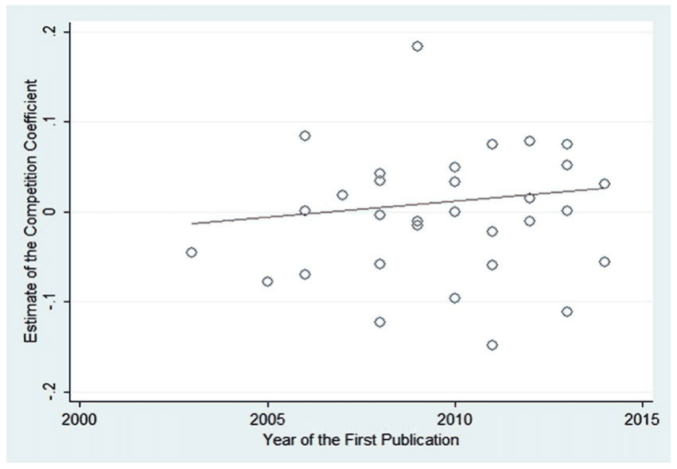
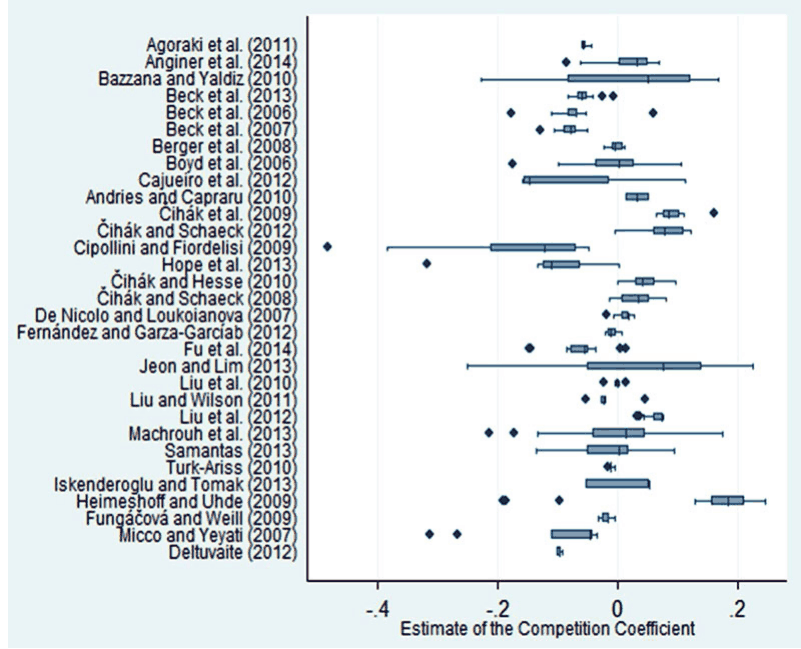
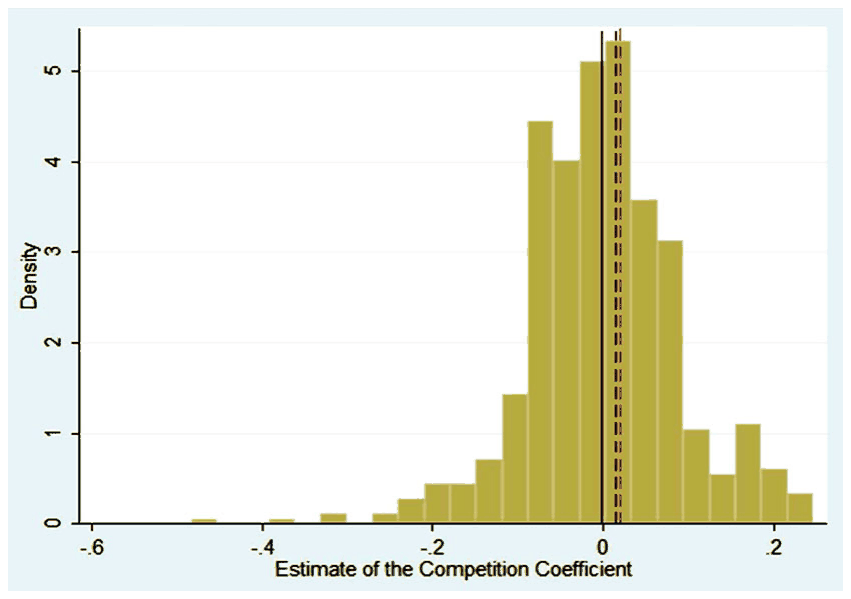
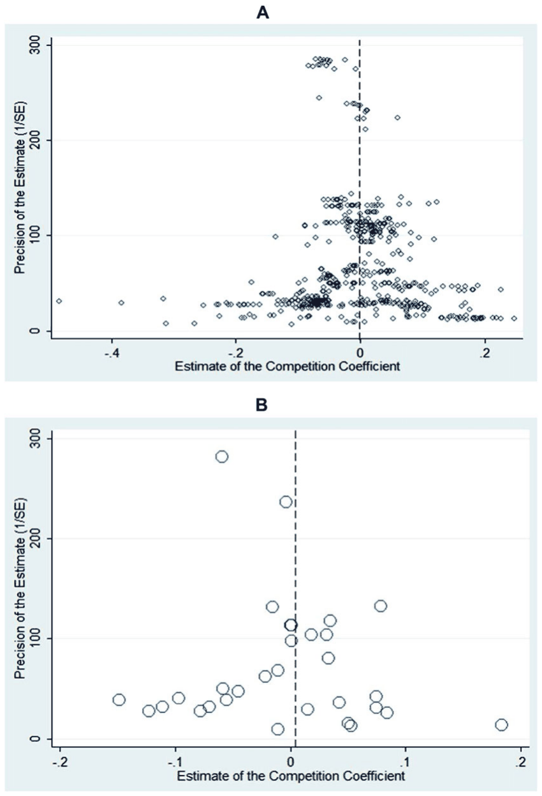
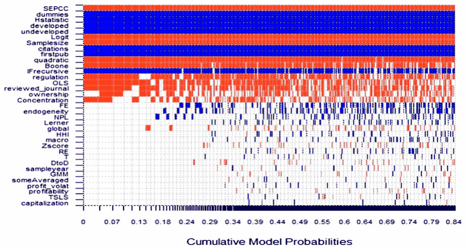
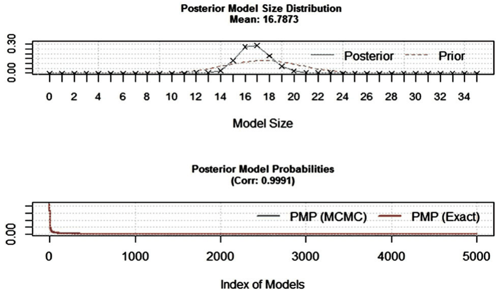
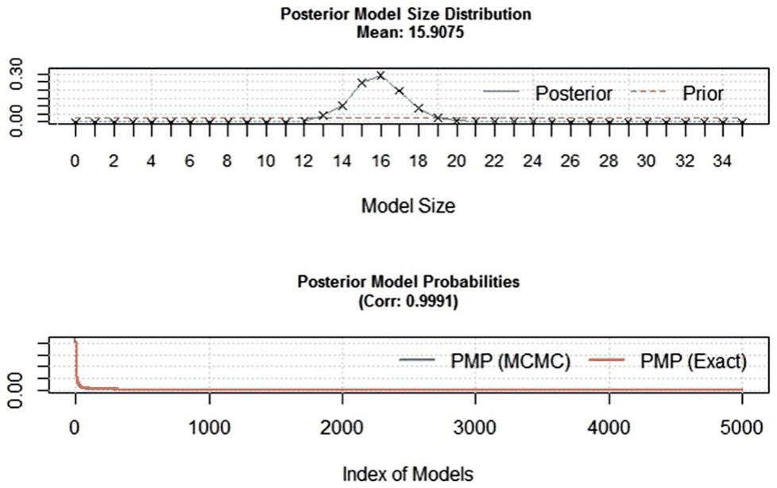
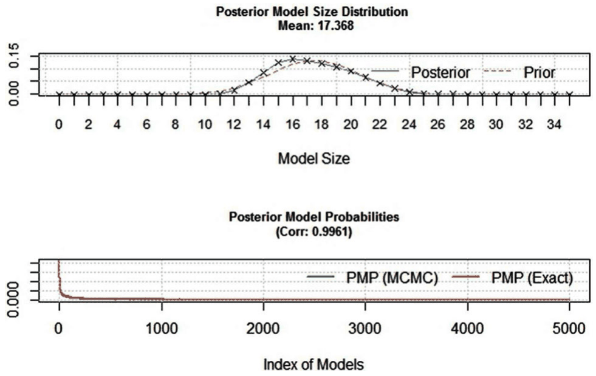

Bank Competition and Financial Stability: Much Ado About Nothing?
Diana Zigraiova and Tomas Havranek (2016), "Bank Competition and Financial Stability: Much Ado About Nothing?" Journal of Economic Surveys 30(5), 944-981. https://doi.org/10.1111/joes.12131.
Diana Zigraiova* and Tomas Havranek
Institute of Economic Studies, Charles University in Prague and Czech National Bank, Prague Czech Republic
*Corresponding author contact email: diana.zigraiova@cnb.cz; Tel:+420 22441 2905.
Abstract
The theoretical literature gives conflicting predictions on how bank competition should affect financial stability, and dozens of researchers have attempted to evaluate the relationship empirically. We collect 598 estimates of the competition-stability nexus reported in 31 studies and analyse the literature using meta-analysis methods. We control for 35 aspects of study design and employ Bayesian model averaging to tackle the resulting model uncertainty. Our findings suggest that the definition of financial stability and bank competition used by researchers influences their results in a systematic way. The choice of data, estimation methodology, and control variables also affects the reported coefficient. We find evidence for moderate publication bias. Taken together, the estimates reported in the literature suggest little interplay between competition and stability, even when corrected for publication bias and potential misspecifications.
Keywords: Bayesian model averaging; Bank competition; Financial stability; Publication selection bias; Meta-analysis
1. Introduction
The theory does not provide clear guidance on the expected sign of the relationship between bank competition and financial stability. On the one hand, the competition-fragility hypothesis (represented, for example, by Keeley, 1990) argues that competition hampers stability. Strong competition in the banking sector forces banks to take on excessive risks in the search for yield, which leads to overall fragility of the financial system. On the other hand, under the competition-stability hypothesis (for instance, Boyd and De Nicolo, 2005), increased competition makes the financial system more resilient. A competitive banking sector results in lower lending rates, which support firms' profitability, leading to lower credit risk for banks. Moreover, in uncompetitive environments banks are more likely to rely on their too-big-to-fail position and engage in moral hazard (Mishkin, 1999). Since the early 2000s, dozens of researchers have reported estimates of the competition-stability nexus, but their results vary. As Figure 1 shows, the reported results do not converge to a consensus number, complicating our inference from the literature.
When the literature lacks patterns visible at first sight, narrative surveys are useful in discussing the reasons for the heterogeneity observed in the results, but they cannot provide policy makers and other researchers with clear guidelines concerning the relationship in question. Our aim in this paper is to collect all available estimates of the relation between bank competition and financial stability, and examine them using up-to-date meta-analysis methods. Meta-analysis is most commonly applied in medical research to synthesize the results of clinical trials, and the use of this method dates back at least to Pearson (1904). Meta-analysis later spread to the social sciences, including economics and finance, and examples of early applications are summarized by Stanley (2001). Recent applications of meta-analysis include Chetty et al. (2011), who explore the intertemporal elasticity of substitution in labour supply; Doucouliagos et al. (2012), who investigate the link between chief executives' pay and corporate performance and Babecky and Havranek (2014), who evaluate the impact of structural reforms on economic growth.

We collect 598 estimates of the competition-stability nexus from 31 studies published between 2003 and 2014, and present, to our knowledge, the first meta-analysis on the topic. We do not find evidence for any robust relationship between bank competition and financial stability: either the positive and negative effects of competition offset each other, or current data and methods do not allow researchers to identify the relationship. This conclusion holds even when we account for publication selection bias and potential misspecifications in the literature.
The studies estimating the effect of bank competition on financial stability differ greatly in terms of the data and methodology used. We account for 35 aspects of studies and estimates, including the length of the sample, regional coverage, the definitions of key variables, the inclusion of controls, the estimation methodology, and publication characteristics (such as the number of citations of the study and the impact factor of the journal). We explore how these aspects affect the reported estimates, and use Bayesian model averaging (BMA; Raftery et al., 1997) to address model uncertainty. BMA is especially useful in meta-analysis, because for many study aspects there is no theory telling us how they should influence the results. Our findings indicate that researchers' choices concerning the data used, the definitions of key variables, and the estimation methodology affect the reported estimates systematically. We also find that highly cited studies published in good journals tend to report larger estimates of the competition-stability nexus. Finally, using all the estimates we construct a synthetic study, for which we select the methodology and publication aspects that we prefer (such as control for endogeneity and the maximum number of citations). The resulting estimate of the competition-stability nexus is very small.
The paper is organized as follows. Section 2 briefly discusses the related literature on the topic and explains how the effect of bank competition on financial stability is estimated. Section 3 explains how we collect the estimates and recompute them to a common metric (partial correlation coefficients). Section 4 tests for the presence of publication bias. Section 5 describes the sources of heterogeneity in the literature and provides estimates of the competition-stability nexus conditional on our definition of best practice. In Section 6 we perform robustness checks using, among other things, alternative priors for BMA and alternative weights. Section 7 concludes. Appendix presents diagnostics of the BMA exercise; the online appendix at http://meta-analysis.cz/competition includes an extensive robustness check using a more homogeneous subsample of estimates, additional results, and also lists the studies included in the meta-analysis.
2. Estimating the Effect of Bank Competition on Financial Stability
The impact of bank competition on financial stability remains a controversial issue in the theoretical literature. Two opposing theories — the competition-stability hypothesis and the competition-fragility hypothesis — can be used to justify the conflicting results often found in empirical studies.
The competition-fragility hypothesis asserts that more competition among banks leads to instability of the financial system. Marcus (1984) and Keeley (1990) model theoretically the "charter value" proposition, where banks choose the risk level of their asset portfolios. In the setting of limited liability, bank owners, who are often given incentives to shift risks to depositors, tend to engage only in the upside part of the risk-taking process. In more competitive systems, this behaviour places substantial emphasis on profits: banks have higher incentives to take on excessive risks, which leads to higher instability of the system in general. In addition, in competitive systems the incentives of banks to properly screen borrowers are reduced, which again contributes to system fragility (Boot and Thakor, 1993; Allen and Gale, 2000; Allen and Gale, 2004). Conversely, when entry barriers are in place and competition in the sector is limited, banks have better profit opportunities and larger capital cushions and, therefore, are not prone to taking aggressive risks. In this framework highly concentrated banking systems contribute to overall financial stability (Boot and Greenbaum, 1993; Hellman, Murdoch, and Stiglitz, 2000; Matutes and Vives, 2000).
The competition-stability hypothesis, on the other hand, proposes that more competitive banking systems imply less fragility of the financial system. Specifically, Boyd and De Nicolo (2005) show that lower client rates facilitate lending as they reduce entrepreneurs' cost of borrowing. Lower costs of borrowing raise the chance of investment success, which, in turn, lowers banks' credit portfolio risk and leads to increased stability within the sector. Some theoretical studies reveal that banks in uncompetitive systems are more likely to originate risky loans, which pave the way to systemic vulnerabilities (Caminal and Matutes, 2002). Similarly, Mishkin (1999) stresses that, in concentrated systems, regulators are prone to implement too-big-to-fail policies that encourage risk-taking behaviour by banks.
Overall, it appears that empirical studies conducted for individual countries do not find conclusive evidence for either the stability-enhancing or the stability-deteriorating view of competition (Fungacova and Weill, 2009; Fernandez and Garza-Garciab, 2012; Liu and Wilson, 2013). Some of the cross-country literature shows that more competitive banking systems are less likely to experience a systemic banking crisis (Beck et al., 2006a; Schaeck et al., 2009). In contrast, other studies (Yeyati and Micco, 2007; Uhde and Heimeshoff, 2009; Boyd et al., 2006) reveal that in more competitive systems bank failures tend to be more frequent. Further research also provides evidence that in more concentrated systems banks have higher capital ratios, which offsets the possibly stronger risk-taking behaviour on their part (Berger et al., 2009; Schaeck and Cihak, 2012).
In this meta-analysis we focus on variants of the following model used in the literature to examine the effect of bank competition on stability:
where is a bank index and a time index and is a set of control variables, both bank-specific and country-specific. Measures of stability and competition tend to vary across individual studies, as we will discuss later in this section (the various estimation methods used by researchers will be discussed in Section 5). We are interested in the coefficient ; positive estimates of the coefficient imply a positive effect of bank competition on financial stability, and vice versa.
Bank stability is often measured in an indirect way: that is, by considering individual or systemic banking distress, effectively the negative of stability. In this spirit, the nonperforming loan (NPL) ratio is often used as a fragility indicator. Nevertheless, the NPL ratio only covers credit risk and cannot be directly linked to the likelihood of bank failure (Beck, 2008). Another measure of individual bank distress extensively used in the literature is the -score (e.g. Boyd and Runkle, 1993; Lepetit et al., 2008; Laeven and Levine, 2009; Cihak and Hesse, 2010). This measure indicates how many standard deviations in return on assets a bank is away from insolvency and, by extension, from the likelihood of failure. The -score is calculated as follows:
where ROA is the rate of return on assets, /TA is the ratio of equity to total assets, and is the standard deviation of the return on assets. Bank profitability, measured by ROA and ROE (return on equity), profit volatility, approximated by ROA and ROE volatility, and bank capitalization, expressed by the capital adequacy ratio (CAR) or the ratio of equity to total bank assets, are additional measures of individual bank distress frequently used in the literature. Moreover, some studies (e.g. Beck et al., 2006a,b) model fragility in the banking sector by means of systemic banking crisis dummies. Other studies (such as Fungacova and Weill, 2009) apply individual bank failure dummies or measures of a bank's distance-to-default to proxy financial stability.
Concerning the proxies for competition, the Lerner index is one of the indicators frequently employed in the literature. This index quantifies the price power capacity of a bank by expressing the difference between price and marginal cost as a percentage of the price:
where is the price of total assets, expressed in practice by total revenues to total bank assets, and is the marginal cost of total assets for bank . The index thus takes values between 0 and 1, with the values of 0 and 1 reached only in the case of perfect competition and under pure monopoly, respectively. Alternatively, the degree of competition in the banking sector can be measured by the so-called -statistic, introduced by Panzar and Rosse (1987). The -statistic measures competition by summing the elasticities of a bank's revenue with respect to its input prices. Another competition measure, the Boone (2008) indicator, applied by Schaeck and Cihak (2012), for example, expresses the effect of competition on the performance of efficient banks and offers an organization-based explanation for how competition can improve stability.
In addition, concentration ratios were originally used as bank competition proxies: for instance, the Herfindahl--Hirschman index and the C3 concentration ratio, which indicates the share of the three largest banks' assets in the total assets of the country's banking system. Nevertheless, some studies (e.g. Claessens and Laeven, 2004) have shown that bank concentration is not an adequate indicator of the competitive nature of the system, as concentration and competition highlight different banking sector characteristics. In the spirit of better erring on the side of inclusion in meta-analysis (Stanley, 2001), we also collect estimates that measure competition by the inverse of concentration, and conduct a robustness check where we exclude these estimates.
3. The Dataset of Competition-Stability Estimates
The first step in any meta-analysis is to collect estimates from primary studies. We search for studies relevant to our meta-analysis using the Google Scholar and RePEc search engines and the following combinations of keywords: 'competition' and 'stability', 'competition' and fragility', 'concentration' and 'stability', and 'concentration' and 'fragility'. We collect both published and unpublished studies, and try to include as many papers as possible. As we need standard errors of the estimates to be able to use up-to-date meta-analysis methods, we have to omit studies that do not report statistics from which standard errors can be computed. In the end, we are left with 31 studies, which report 598 estimates; the oldest study in our sample was published in 2006. We also collect 35 variables reflecting the context in which researchers obtain their estimates. Our data collection strategy, as well as all other aspects of this meta-analysis, conform to the Meta-Analysis of Economics Research Reporting Guidelines (Stanley et al., 2013).
Given the broad scope of the measures used in the literature to proxy for both bank competition and financial stability, it is imperative that we recompute the individual estimates to a common metric. Because some stability proxies measure financial fragility and some competition proxies investigate how uncompetitive the market is (e.g. larger values of the Lerner index imply a less competitive nature of the system), we adjust the signs of the collected estimates so that they directly reflect the relationship between competition and stability. After this adjustment the collected estimates imply either that higher competition increases bank stability or that higher competition decreases bank stability, and they could be compared with each other if all studies used the same units of measurement.
Because of the inconsistency in the use of measurement units of regression variables in the literature, we transform the reported estimates into partial correlation coefficients (PCCs). The PCC is a unitless measure of the strength and direction of the association between two variables, competition and stability in our case, while holding other variables constant (Stanley and Doucouliagos, 2012). The PCCs enable us to directly compare estimates reported in different studies. This technique is widely used in meta-analysis research nowadays; a related application can be found, for example, in Valickova et al. (2014).
The partial correlation coefficient is calculated according to the following formula:
where is the -statistic of the reported coefficient and denotes the number of degrees of freedom used for the estimation. The corresponding standard errors of the PCC are calculated as follows:
Moreover, if the primary study assumes a quadratic relationship between competition and stability and thus reports two coefficients associated with the measure of competition, the overall impact on stability needs to be linearized using the following formula:
where is the estimate of the competition coefficient for the linear term, is the estimate of the competition coefficient for the quadratic term, is the sample mean of the competition measure in the study, is the standard error of the reported coefficient for the linear term, and is the standard error of the reported coefficient for the quadratic term. The covariance term is omitted from the formula because of the unavailability of the original data. The resulting coefficient of bank competition after linearization is subsequently transformed into the PCC in line with equations (4) and (5).

Figure 2 depicts the within- and between-study dispersion in the partial correlation coefficients of the competition-stability estimates reported in the 31 studies that we examine in this meta-analysis. It is apparent that the literature is highly heterogeneous, both between and within studies. Meta-analysis will help us to formally trace the sources of this heterogeneity.
Table 1 shows summary statistics for all the estimates and for two subsamples of the estimates that evaluate the effect for developed and developing countries. The left-hand part of the table shows unweighted means, whereas the right-hand part shows means weighted by the inverse of the number of estimates reported per study. All the means are close to zero, indicating little interplay between competition and stability. The estimates for developed countries are slightly larger than those for developing and transition countries. (The overall mean is slightly negative, whereas the means for both developing and developed countries are positive, which suggests that studies that mix these two groups tend to find smaller estimates of the effect.) Nevertheless, all these values are negligible and would be classified as implying no effect according to the guidelines for the interpretation of partial correlation coefficients in economics (Doucouliagos, 2011).
| Unweighted Mean | Unweighted 95% Conf. Int. | Weighted Mean | Weighted 95% Conf. Int. | No. of estimates | |
|---|---|---|---|---|---|
| All | −0.001 | −0.025 0.023 | −0.012 | −0.035 0.011 | 598 |
| Developed | 0.020 | −0.032 0.073 | 0.011 | −0.030 0.052 | 201 |
| Developing and transition | 0.001 | −0.022 0.023 | −0.019 | −0.051 0.012 | 194 |
Notes: The table presents the mean PCCs of the competition coefficient estimates [the PCCs of the estimates from Equation (1)] over all countries and for selected country groups. The confidence intervals around the mean are constructed using standard errors clustered at the study level. In the right-hand part of the table, the estimates are weighted by the inverse of the number of estimates reported per study.

Figure 3 depicts the distribution of the partial correlation coefficients of all the competition coefficient estimates. It appears that the PCCs are symmetrically distributed around zero with a mean of −0.0009, whereas the mean of the study-level medians is also close to zero and equals 0.0099. We also report the mean of the PCCs of the estimates that are reported in studies published in peer-reviewed journals, as opposed to those reported in unpublished manuscripts. In total, 21 of the 31 studies in our sample were published in peer-reviewed journals, yielding 376 estimates of the competition coefficient. The mean for published studies is 0.0116: it appears that journals tend to report slightly larger estimates of the competition coefficient compared to the grey literature.
4. Testing for Publication Bias
Publication selection bias arises when an estimate's probability of being reported depends on its sign or statistical significance. Rosenthal (1979) refers to this phenomenon as the 'file drawer problem', implying that researchers may hide estimates that are either insignificant or have a counterintuitive sign in their file drawers, and seek instead to obtain new estimates that would be easier to publish. A number of studies, for example, by DeLong and Lang (1992), Card and Krueger (1995), and Ashenfelter et al. (1999), identify publication selection bias in empirical economics. In addition, Doucouliagos and Stanley (2013) conduct a survey of meta-analyses and find that most fields of empirical economics suffer from publication bias. The bias tends to inflate the mean estimates reported by empirical studies. For example, Doucouliagos and Stanley (2009) estimate that the adverse employment effect of minimum wage increases is seriously overstated in the published empirical literature. In our case there are opposing theories concerning the effect of competition on stability, so both positive and negative estimates are publishable, which might alleviate publication bias. In this section, we test for potential publication bias in the literature evaluating the competition-stability nexus before we proceed with the analysis of heterogeneity in the next section.
We start with visual tests for the presence of publication bias. The most commonly applied graphical test uses the so-called funnel plot (Egger et al., 1997), which depicts the magnitude of the estimated effect on the horizontal axis and precision (the inverse of the estimated standard error) on the vertical axis. The most precise estimates (located at the top of the funnel) should be close to the true underlying effect. With decreasing precision, the estimates get more dispersed; overall, they should form a symmetrical inverted funnel. If there is publication bias in the literature, the funnel is either asymmetrical because of the exclusion of estimates of a certain sign or size, or hollow because of the omission of insignificant estimates, or displays both these properties.
Figure 4A shows the funnel plot for the PCCs of all the competition coefficient estimates reported in the studies, whereas Figure 4B depicts the funnel plot for the median values of the PCCs of the estimates reported in individual studies. We observe that both funnels are relatively symmetrical, and the most precise estimates are close to the mean reported PCC of the estimates. Moreover, the funnels are not hollow, and even estimates with very little precision (and large p-values) at the bottom of both plots are reported. Therefore, we can infer that these funnel plots do not point to the presence of publication bias in the competition-stability literature, as opposed to the findings in most other fields in economics and finance (e.g. Havranek and Irsova, 2011, 2012; Havranek et al., 2012).
A more rigorous approach to testing for publication bias consists in funnel asymmetry tests. These tests explore the relationship between the collected coefficient estimates and their standard errors following the methodology suggested by Card and Krueger (1995). In the presence of publication selection, the reported estimates are correlated with their standard errors. For example, if negative estimates are omitted, a positive relationship appears between the reported coefficient estimates and their standard errors because of heteroskedasticity in the equation (Stanley, 2008). Similarly, researchers who prefer statistical significance need large estimates to offset large standard errors. Thus, we estimate the following equation:
where is the partial correlation coefficient of the competition coefficient estimate, is the standard error of the partial correlation coefficient, is the mean PCC corrected for the potential publication bias, measures the extent of publication bias, and is a disturbance term. Equation (7) is commonly called the funnel asymmetry test, as it follows from rotating the axes of the funnel plot and inverting the values on the new horizontal axis so that it now shows standard errors instead of precision.1

| Unweighted regressions | Fixed effects | Fixed Effects_Published | Instrument | Instrument_Published |
|---|---|---|---|---|
| SE (publication bias) | −1.671** | −1.898** | −1.614*** | −2.291*** |
| Constant (effect beyond bias) | 0.044** | 0.073** | 0.043*** | 0.086*** |
| No. of estimates | 598 | 376 | 598 | 376 |
| No. of studies | 31 | 21 | 31 | 21 |
| Weighted regressions | Fixed effects | Fixed Effects_Published |
|---|---|---|
| SE (publication bias) | −1.568*** | −1.636*** |
| Constant (effect beyond bias) | 0.034*** | 0.044*** |
| No. of estimates | 598 | 376 |
| No. of studies | 31 | 21 |
Notes: The table presents the results of the regression specified in Equation (7). The standard errors of the regression parameters are clustered at the study level. Published = we only include published studies. Fixed Effects = we use study dummies. Instrument = we use the logarithm of the number of observations in Equation (1) as an instrument for the standard error and employ study fixed effects. The regressions in the bottom half of the table are estimated by weighted least squares, where the inverse of the number of estimates reported per study is taken as the weight. ***, **, and * denote statistical significance at the 1%, 5%, and 10% level, respectively.
The results of the funnel asymmetry tests are presented in Table 2. The coefficient estimates in the upper part of the table result from fixed effects2 estimation with standard errors clustered at the level of individual studies and from instrumental variable estimation (where the number of observations is used as an instrument for the standard error). Fixed effects control for method or other quality characteristics specific to individual studies. We also report results for the subsample of estimates reported in published studies to see whether they show different levels of publication selection bias. The bottom half of the table presents results from regressions weighted by the inverse of the number of estimates reported per study in order to diminish the effect of studies reporting many estimates. In all specifications in Table 2, both coefficient estimates are significant at least at the 5% level. A moderate negative publication bias is present, and the estimated size of the competition-stability effect beyond publication bias appears to be close to zero, especially for weighted results. For unweighted results we obtain small effect sizes according to the guidelines by Doucouliagos (2011) for partial correlations reported in the field of industrial organization.
The magnitude of the publication bias is slightly larger in published studies than in unpublished manuscripts, but the difference is not statistically significant. We consider it remarkable that the fixed effects and instrumental variable specifications yield very similar results. In meta-analysis it is important to check for endogeneity of the standard error, because very often it can happen that the meta-analyst cannot collect all relevant information on the methodology used in the primary studies. If the meta-analyst omits an aspect of methodology that influences both the reported coefficients and their standard errors in the same direction, he or she will obtain biased estimates of the magnitude of the publication bias. Our results suggest that in the case of the competition-stability nexus endogeneity is not an important issue.
Equation (7), however, suffers from heteroskedasticity, because the explanatory variable directly captures the variance of the response variable. To achieve efficiency, many meta-analysis applications divide equation (7) by the corresponding standard error, that is they multiply the equation by the precision of the estimates. This specification places more emphasis on precise results. Dividing equation (7) by the corresponding SE of the PCC, we obtain the following equation:
where is the mean PCC of the coefficient estimate corrected for the potential publication bias, measures the extent of publication bias, and is the corresponding t-statistic. Table 3 presents results from the heteroskedasticity-corrected equation (8).
| Weighted by precision | Fixed effects | Fixed Effects_Published | Instrument | Instrument_Published |
|---|---|---|---|---|
| 1/SE (effect beyond bias) | 0.005 | 0.065 | 0.019** | 0.053*** |
| Constant (publication bias) | −0.757 | −4.000* | −1.706** | −3.344*** |
| No. of estimates | 598 | 376 | 598 | 376 |
| No. of studies | 31 | 21 | 31 | 21 |
| Weighted by precision and No. of observations | Fixed effects | Fixed Effects_Published |
|---|---|---|
| 1/SE (effect beyond bias) | 0.013 | 0.056** |
| Constant (publication bias) | −1.539** | −4.339** |
| No. of estimates | 598 | 376 |
| No. of studies | 31 | 21 |
Notes: The table presents the results of the regression specified in Equation (8). The standard errors of the regression parameters are clustered at the study level. Published = we only include published studies. Fixed Effects = we use study dummies. Instrument = we use the logarithm of the number of observations in Equation (1) as an instrument for the standard error and employ study fixed effects. The regressions in the bottom half of the table are additionally weighted by the inverse of the number of estimates reported per study. ***, **, and * denote statistical significance at the 1%, 5%, and 10% level, respectively.
We can observe from Table 3 that publication bias is not equally strong across all specifications, in contrast to Table 2. Moreover, the true underlying effect beyond publication bias is only significant when equation (8) is estimated by means of instrumental variables or by fixed effects for the subsample of published studies. Table 3 confirms that the competition-stability effect beyond publication bias is indeed close to zero, as no estimate surpasses the threshold defined by Doucouliagos (2011) to denote at least a weak effect. The story changes for publication bias, which now seems to be much stronger in published studies than in unpublished manuscripts, which would suggest that journal editors or referees prefer papers that show results consistent with the competition-fragility hypothesis.
For evaluation of the extent of publication bias, Doucouliagos and Stanley (2013) provide guidelines for the value of the constant in the funnel asymmetry test specified by equation (8). They identify that the literature suffers from substantial selectivity if from equation (8) is statistically significant and, at the same time, . Both conditions hold for the value of the constant estimated by fixed effects and weighted by the inverse of the number of observations, as well as for the constant in regressions estimated by the instrumental variable method. The values of the coefficient estimated in Table 3 for published studies are even larger than 2, which would suggest severe publication bias according to the guidelines by Doucouliagos and Stanley (2013). Nevertheless, we believe the overall evidence points to only moderate publication bias, because the corrected estimates of the competition-stability nexus are close to the simple mean of all the estimates uncorrected for publication bias.
5. Why the Reported Coefficients Vary
5.1 Variable Description and Methodology
In this section we add the characteristics of the studies and estimates into equation (7) to explore what drives the heterogeneity in the literature. We do not weight the resulting equation by precision as is the case in equation (8) weighting by the estimates' precision introduces artificial variation into variables that are defined at the study level (e.g. the impact factor of the study) or that tend to vary little within studies (e.g. sample size). In contrast, we weight the regressions by the inverse of the number of estimates reported per study to give the same importance to each study in our dataset. In the next section we also perform a robustness check for regressions not weighted by the number of estimates per study.
Table 4 describes all the variables that we collect from the primary studies. For each variable the table also shows the mean, the standard deviation, and the mean weighted by the inverse of the number of estimates reported per study. For ease of exposition we divide the collected variables into eight groups.
| Variable | Description | Mean | SD | WM |
|---|---|---|---|---|
| Data characteristics | ||||
| Competition coefficient | The coefficient capturing the effect of bank competition on financial stability (recomputed to the partial correlation coeff.) | −0.001 | 0.090 | −0.012 |
| SEPCC | The estimated standard error of the competition coefficient | 0.027 | 0.022 | 0.029 |
| Sample size | The logarithm of the number of cross-sectional units used in the competition-stability regression | 7.835 | 1.615 | 7.760 |
| T | The logarithm of the number of time periods (years) | 2.224 | 0.743 | 2.264 |
| Sample year | The mean year of the sample period on which the competition-stability regression is estimated (base: 1992,5) | 8.889 | 4.328 | 9.340 |
| Countries examined | ||||
| developed | Equals 1 if the researcher only examines OECD countries | 0.336 | 0.473 | 0.366 |
| developing and transition | Equals 1 if the researcher only examines non-OECD countries | 0.324 | 0.469 | 0.376 |
| Reference case: mixed | Equals 1 if the researcher examines both OECD and non-OECD countries (omitted category) | 0.339 | 0.474 | 0.258 |
| Design of the analysis | ||||
| quadratic | Equals 1 if the square of the competition coefficient is included in the regression | 0.119 | 0.324 | 0.217 |
| endogeneity | Equals 1 if the estimation method accounts for endogeneity | 0.635 | 0.482 | 0.713 |
| macro | Equals 1 if the competition-stability regression is estimated using country-level data | 0.256 | 0.437 | 0.133 |
| averaged | Equals 1 if the competition-stability regression uses variables in the form of country-level averages over banks | 0.120 | 0.326 | 0.085 |
| Treatment of stability | ||||
| dummies | Equals 1 if stability is measured by a crisis dummy or a bank failure dummy | 0.142 | 0.349 | 0.129 |
| NPL | Equals 1 if stability is measured by nonperforming loans as a share of total loans | 0.050 | 0.218 | 0.095 |
| Z-score | Equals 1 if stability is measured by the Z-score statistic | 0.452 | 0.498 | 0.537 |
| profit_volat | Equals 1 if stability is measured by ROA volatility or ROE volatility | 0.075 | 0.264 | 0.039 |
| profitability | Equals 1 if stability is measured by ROA or ROE | 0.043 | 0.204 | 0.045 |
| capitalization | Equals 1 if stability is measured by the capital adequacy ratio (CAR) or the equity-total assets ratio | 0.069 | 0.253 | 0.040 |
| Variable | Description | Mean | SD | WM |
|---|---|---|---|---|
| DtoD | Equals 1 if stability is measured by Logistic R2 Merton's distance-to-default or probability of bankruptcy | 0.065 | 0.247 | 0.047 |
| Reference: other_stability | Equals 1 if stability is measured by a less frequently used method (omitted category) | 0.104 | 0.305 | 0.069 |
| Treatment of competition | ||||
| H-statistic | Equals 1 if competition is measured by the H-statistic | 0.090 | 0.287 | 0.098 |
| Boone | Equals 1 if competition is measured by the Boone indicator | 0.075 | 0.264 | 0.108 |
| Concentration | Equals 1 if competition is measured by concentration measures C3 or C5 | 0.157 | 0.364 | 0.147 |
| Lerner | Equals 1 if competition is measured by the Lerner index | 0.360 | 0.480 | 0.414 |
| HHI | Equals 1 if competition is measured by the Herfindahl-Hirschman index | 0.266 | 0.442 | 0.197 |
| Reference: other_competition | Equals 1 if competition is measured by a less frequently used method (omitted category) | 0.052 | 0.222 | 0.037 |
| Estimation methods | ||||
| Logit | Equals 1 if the logit or probit model is used in the estimation of the competition-stability regression | 0.172 | 0.378 | 0.161 |
| OLS | Equals 1 if OLS is used in the estimation | 0.137 | 0.344 | 0.115 |
| FE | Equals 1 if fixed effects are used in the estimation | 0.229 | 0.421 | 0.136 |
| RE | Equals 1 if random effects are used in the estimation | 0.067 | 0.250 | 0.043 |
| GMM | Equals 1 if GMM is used in the estimation | 0.182 | 0.386 | 0.309 |
| TSLS | Equals 1 if two-stage least squares are used in the estimation | 0.149 | 0.356 | 0.110 |
| Reference: other_method | Equals 1 if a less frequently used method is employed (omitted category) | 0.064 | 0.244 | 0.126 |
| Control variables | ||||
| regulation | Equals 1 if regulatory/supervisory variables are included in the competition-stability regression | 0.239 | 0.427 | 0.282 |
| ownership | Equals 1 if bank ownership is controlled for in the competition-stability regression | 0.166 | 0.372 | 0.271 |
| global | Equals 1 if macroeconomic variables are included in the competition-stability regression | 0.794 | 0.405 | 0.764 |
| Publication characteristics | ||||
| citations | The logarithm of the number of Google Scholar citations normalized by the difference between 2015 and the year the study first appeared in Google Scholar (collected in July 2014) | 2.045 | 1.222 | 1.790 |
| Variable | Description | Mean | SD | WM |
|---|---|---|---|---|
| firstpub | The year when the study first appeared in Google Scholar (base: 2003) | 6.453 | 2.979 | 6.677 |
| IFrecursive | The recursive impact factor of the outlet from RePEc (collected in July 2014) | 0.243 | 0.210 | 0.205 |
| reviewed_journal | Equals 1 if the study is published in a peer-reviewed journal | 0.629 | 0.484 | 0.677 |
Notes: SD = standard deviation. WM = mean weighted by the inverse of the number of estimates reported per study. All variables except for citations and the impact factor are collected from studies estimating the competition coefficient from Equation (1). The search for studies was terminated on July 1, 2014, and the list of studies included is available in the online appendix. Citations are collected from Google Scholar and the impact factor from RePEc.
Group 1 – Data characteristics
We control for the number of cross-sectional units and time periods used to estimate the competition coefficient in equation (1). Ceteris paribus, we intend to place more weight on studies that use larger samples to minimize the potential small-sample bias, and it is therefore important to check whether such studies yield systematically different results. Although being correlated with the standard error, the number of cross-sectional units and time periods bring additional information to our model, and the results can suggest whether the bias identified in the previous section is because of publication selection or small samples. Moreover, we control for the age of the data used in the primary studies by including the variable sampleyear, which represents the midpoint of the data period used by researchers. Although Figure 1 suggests no significant time trend in the estimates of the competition-stability nexus, perhaps the literature can be shown to converge to a particular result when data and method heterogeneity in primary studies is controlled for.
Group 2 – Countries examined
We account for potential cross-country heterogeneity by including dummies for developed (OECD member) countries and developing and transition (non-OECD) countries. The characteristics of the banking sector (measured, e.g., by the credit-to-GDP ratio) differ greatly between developed and developing countries, which can affect the results of primary studies. In our sample, 34% of all the collected estimates are obtained using a sample of developed countries, whereas 32% of estimates are extracted from studies focusing on developing and transition countries. The reference case for this group of dummy variables is estimation that mixes these two groups.
Group 3 – Design of the analysis
We control for the general design of the studies in our sample, captured by the variables quadratic, endogeneity, macro, and averaged. First, the dummy variable quadratic controls for the inclusion of the square of the competition measure in the regressions. In total, 12% of the estimates in our sample have to be linearized because researchers test for possible nonlinear relationships between bank competition and stability (in the next section we will discuss how our results change when we conduct separate meta-analyses of the linear and quadratic term). The dummy variable endogeneity reflects whether individual studies account for potential endogeneity in their analysis, either by employing estimation methods with instruments or by using lagged values of bank competition in equation (1). Later we also include dummy variables for estimation methods, some of which control for endogeneity. Nevertheless, the correlations between these variables and endogeneity do not exceed 0.42. Next, the dummy variable macro assigns the value 1 to an estimate if the estimate is calculated using data constructed at the aggregate level, as opposed to studies using bank-level data. The motivation behind this control emerges from the narrative literature survey by Beck (2008), who notes that bank-level studies tend to obtain smaller estimates of the competition effect, perhaps because they fail to capture spillovers to other sectors of the economy. Finally, the dummy variable averaged assigns the value 1 to an estimate if the regressors in equation (1) in the original study are constructed as country-level averages over banks, even though the data are technically bank-level. This simplification decreases the variance available for the estimation, and might lead to aggregation bias. Twelve percent of the collected competition effect estimates are extracted from studies that use explanatory variables in the form of averages over the observed period in their regressions (e.g. Levy Yeyati and Micco, 2007; Berger et al., 2009).
Group 4 – Treatment of stability
Because of the large diversity of the approaches to measuring financial stability in the literature, it is possible that a portion of the variation in the competition coefficient estimates is because of a different definition of stability. We distinguish between the seven most common approaches. Some researchers use dummy variables representing either the outbreak of a systemic banking crisis or a bank failure (e.g. Beck et al., 2006a,b; Fungacova and Weill, 2009). Popular methods for measuring individual bank stability include the ratio of nonperforming loans to total bank loans, the Z-score, an aggregate measure of bank stability, fluctuations in the return on assets (ROA) or the return on equity (ROE) as indicators of bank profit volatility, ROA or ROE as measures of bank profitability, measures of capitalization, the capital adequacy ratio or equity to assets ratio, and measures of distance to default. The reference case for this group of dummy variables accounts for additional approaches to quantifying financial stability that are used less frequently, such as the ratio of loan loss reserves to total assets, the ratio of deposits to total bank liabilities, or the shareholder value ratio expressed as economic value added over the capital invested by shareholders.
Group 5 – Treatment of competition
Similarly to the indicators of stability, there is large diversity in the approaches to quantifying competition within the banking sector. We control for the five most commonly used measures. We include Panzar and Rosse's (1987) H-statistic and Boone's (2008) index. Quite frequently, measures of market structure are applied to assess the intensity of competition in the sector; concentration ratios are one type of such measures. For 36% of the estimates in our sample, competition is measured via the Lerner index. Herfindahl–Hirschman indices (HHI) are another example of market structure measures extensively used in the literature. Overall, market structure measures are used to compute 42% of the estimates in the sample (e.g. by Beck et al., 2006a,b; Boyd et al., 2006; Berger et al., 2009; Cipollini and Fiordelisi, 2009). We decide to include the estimates arising from the use of these market structure measures in our analysis despite the recent assertions in the literature that concentration is not a suitable proxy for a lack of competition (e.g. Bikker, 2004; Claessens and Laeven, 2004). As a robustness check in the online appendix, we estimate the impact of competition on stability after excluding these potentially misspecified estimates from our sample. The reference case for this group of dummy variables covers alternative and infrequently used proxies of market competition, for example, the extent of entry barriers into banking and percentage of applications to enter banking denied (Anginer et al., 2014), market pressure dummy (Jeon and Lim, 2013), and market power calculated as the difference between total revenues and total costs over total bank revenues (Bazzana and Yaldiz, 2010).
Group 6 – Estimation methods
We control for six different estimation methods in our analysis: logit, OLS, FE, RE, GMM, and TSLS. Based on the findings of many previous meta-analyses, we assume that different methods might systematically affect the resulting estimates of the competition coefficient. As to the frequency of use, 17% of estimates originate from logit estimation, 14% from OLS, 23% from fixed effects, 7% from random effects, 18% from GMM, and 15% from TSLS. In our dataset, the variable reflecting the use of logit is not identical to the variable that captures the use of dummy variables on the left-hand side, because some of the studies that employ dummy variables use linear estimation techniques. Moreover, other studies, for example, Cipollini and Fiordelisi (2009), incorporate either random effects or GMM estimators into logit and probit models, which we in turn classify into the RE or GMM categories. The reference case for this group represents sporadically used estimation methods in the literature, for example Tobit regressions (Turk Ariss, 2010; Fu et al., 2014), generalized least squares (Liu et al., 2012), and weighted least squares (Levy Yeyati and Micco, 2007).
Group 7 – Control variables
The most commonly used controls in the estimation of the competition-stability relationship in equation (1) are regulatory and supervisory variables such as capital stringency, supervisory power, the investor protection index, economic and banking freedom, the share of market entry restrictions or governance (e.g. Beck et al., 2006a,b; Cihak et al., 2009; Agoraki et al., 2011; Beck et al., 2013; Anginer et al., 2014), ownership controls, that is, foreign and state bank ownership (e.g. De Nicolò and Loukoianova, 2007; Berger et al., 2009; Bazzana and Yaldiz, 2010) and macroeconomic variables defined at the country level, such as GDP growth and real interest rate (Agoraki et al., 2011), trade as share of GDP, private credit as GDP share (Anginer et al., 2014), terms of trade, inflation, M2 share of reserves (Beck et al., 2006a,b) or exchange rate (Boyd et al., 2006). Including macroeconomic variables in regressions in original studies aims to proxy the economic climate (e.g. Beck et al., 2006a,b). Specifically, short-term real interest rates reflect the banks' cost of funds that may impact bank profitability via default rates. Similarly, foreign exchange risk, measured by exchange rate depreciation and the ratio of M2 to foreign exchange reserves, captures a bank's vulnerability to abrupt capital outflows. Moreover, credit growth controls for potential large credit expansion that can lead to asset price bubbles and upon their burst to a subsequent crisis in the sector. Regulatory and supervisory controls are used in 24% of regressions, ownership variables in 17% of estimations, and macroeconomic variables are used as controls in 79% of regressions.
Group 8 – Publication characteristics
We control for study quality by including the number of citations. This control reflects additional aspects of study quality not captured by other variables described above. Although the number of citations is an imperfect control for quality (and may be also influenced by the results of the study), we find it appealing to place more weight on highly-cited studies, other things (especially data and methodology) being equal. To control for the potential time trend in the literature, we add the year when each study first appeared in Google Scholar. Another control we use to account for study quality is the recursive RePEc impact factor of the outlet. Finally, in order to evaluate whether studies published in peer-reviewed journals report systematically different estimates in comparison to unpublished studies after we control for data and methodology, we include a corresponding dummy variable.
We would like to run a regression with the PCC of the estimates of the competition coefficient as the dependent variable and all the variables introduced above as explanatory variables. Nevertheless, including all of the variables at the same time is infeasible as we would probably obtain many redundant regressors in the specification. With such a large number of explanatory variables, we initially do not know which ones should be excluded from the model. An ideal approach would be to run regressions with different subsets of independent variables to ensure that our results are robust: to this end, we employ BMA to resolve the model uncertainty problem, an issue that is inevitable in meta-regression analysis. BMA runs many regressions with different subsets of all the possible combinations of explanatory variables (we have 35 regressors at our disposal). To make the estimation feasible, we employ the Monte Carlo Markov Chain algorithm to go through the most promising of the potential models (we use the bms package for R developed by Feldkircher and Zeugner, 2009). BMA gives each model a weight, which can be thought of as an analogy of the adjusted R-squared, to capture the model's fit. Finally, BMA reports weighted averages from the models for posterior mean values of regression parameters and posterior standard deviations, which capture the distribution of regression parameters across individual models. Moreover, a posterior inclusion probability (PIP) is reported for each variable to show the probability with which the variable is included in the true model. Raftery et al. (1997) and Eicher et al. (2011) provide further details on BMA in general. Detailed diagnostics of our BMA exercise can be found in Appendix.
5.2 Results
Figure 5 shows the results of the BMA exercise. The columns in the figure denote the individual regression models, whereas their width indicates the models' posterior probabilities. The variables are sorted by their PIP in descending order. If the sign of a variable's regression coefficient is positive, it is denoted by blue colour (darker in grayscale). Conversely, if the sign of a variable's coefficient is negative, it is coloured in red. Where a variable is excluded from a model, the corresponding cell is left blank. The horizontal axis measures the cumulative model probabilities: the models that are the most successful in explaining the heterogeneity in the estimates of the competition effect are on the left, and we can see that they include less than a half of all the variables.
The numerical results of the BMA exercise are reported in Table 5. On the right-hand side of the table we also report the results of OLS estimation with standard errors clustered at the level of individual studies. From this 'frequentist check' we exclude the variables that prove to be irrelevant for the explanation of the variability in the literature (i.e. have PIP lower than 0.5). The OLS regression thus includes 15 variables identified by BMA to help explain the variation in the reported competition effects. Overall, OLS with clustered standard errors yields results consistent with BMA for variables with high inclusion probabilities. The signs of the variables' regression parameters are the same and the size of their parameter estimates is similar as well. Therefore, we can conclude that our results are robust to error-clustering, as BMA by definition does not cluster standard errors in the estimation. Eicher et al. (2011) provide a framework for the identification of the strength of the variables' effect in BMA. The effect of a variable is considered weak if the corresponding PIP is between 0.5 and 0.75, substantial if it is between 0.75 and 0.95, strong if it is between 0.95 and 0.99, and decisive if it exceeds 0.99.

The results of our BMA exercise support the notion of the presence of publication bias (the regression coefficient on the standard error is similar to the one presented in Section 4); it seems that positive and insignificant estimates are underreported in the literature, because researchers tend to prefer results that are consistent with the competition-fragility hypothesis. Next, the larger the size of the data sample, the smaller the reported coefficient appears to be. As for country coverage, it seems that the estimates for developed countries tend to be slightly larger than those for non-OECD countries. The use of a quadratic relationship between competition and financial stability is associated with estimates that are on average 0.05 smaller, and the corresponding variable has a decisive posterior inclusion probability. Interestingly, the choice between micro and macro data in specifying the empirical exercise in primary studies does not influence the results significantly.
When financial stability is proxied by dummy variables for financial distress, the resulting competition coefficient estimates tend to be inflated by 0.21. In contrast, the use of macro data does not affect the reported results in a systematic way. This finding is at odds with the literature survey by Beck (2008, p. 6), who notes that 'while bank-level studies do not provide unambiguous findings on the relationship between competition and stability, cross-country studies point mostly to a positive relationship'. Similarly, our results contrast the finding by Schaeck and Cihak (2012), who argue that banks have higher capital ratios in more competitive environments, and thus that capitalization is one of the channels through which competition enhances stability. On the contrary, after controlling for many other method choices, we find that the use of capitalization as a proxy for stability does not affect the reported estimates of the effect of competition on stability.
| Response variable | Bayesian model averaging | Frequentist check (OLS) | ||||
|---|---|---|---|---|---|---|
| Competition effect | Post. mean | Post. SD | PIP | Coeff. | Robust SE | P-value |
| Data characteristics | ||||||
| SEPCC | −1.7883 | 0.2046 | 1.0000 | −1.1940 | 0.6511 | 0.067 |
| Samplesize | −0.0367 | 0.0035 | 1.0000 | −0.0240 | 0.0089 | 0.007 |
| T | 0.0005 | 0.0039 | 0.0517 | |||
| sampleyear | 0.0000 | 0.0005 | 0.0456 | |||
| Countries examined | ||||||
| developed | 0.2015 | 0.0219 | 1.0000 | 0.1761 | 0.0295 | 0.000 |
| developing and transition | 0.1072 | 0.0169 | 1.0000 | 0.0985 | 0.0262 | 0.000 |
| Design of the analysis | ||||||
| quadratic | −0.0533 | 0.0124 | 0.9971 | −0.0441 | 0.0128 | 0.001 |
| endogeneity | 0.0100 | 0.0212 | 0.2371 | |||
| macro | 0.0025 | 0.0124 | 0.0699 | |||
| someAveraged | −0.0004 | 0.0047 | 0.0397 | |||
| Treatment of stability | ||||||
| dummies | 0.2115 | 0.0282 | 1.0000 | 0.1841 | 0.0194 | 0.000 |
| NPL | 0.0020 | 0.0060 | 0.1323 | |||
| Z-score | −0.0005 | 0.0027 | 0.0630 | |||
| profit_volat | 0.0006 | 0.0051 | 0.0371 | |||
| profitability | −0.0003 | 0.0030 | 0.0354 | |||
| capitalization | 0.0001 | 0.0029 | 0.0271 | |||
| DtoD | −0.0013 | 0.0078 | 0.0504 | |||
| Treatment of competition | ||||||
| H-statistic | 0.1083 | 0.0217 | 1.0000 | 0.1140 | 0.0181 | 0.000 |
| Boone | −0.0709 | 0.0313 | 0.8974 | −0.0583 | 0.0225 | 0.010 |
| Concentration | −0.0185 | 0.0226 | 0.4742 | |||
| Lerner | 0.0036 | 0.0130 | 0.1217 | |||
| HHI | 0.0023 | 0.0108 | 0.0847 | |||
| Estimation methods | ||||||
| Logit | −0.1874 | 0.0230 | 1.0000 | −0.1599 | 0.0190 | 0.000 |
| OLS | −0.0352 | 0.0244 | 0.7558 | −0.0382 | 0.0184 | 0.038 |
| FE | 0.0113 | 0.0211 | 0.2774 | |||
| RE | 0.0018 | 0.0115 | 0.0581 | |||
| GMM | −0.0003 | 0.0029 | 0.0402 | |||
| TSLS | −0.0001 | 0.0030 | 0.0323 | |||
| Control variables | ||||||
| regulation | −0.0321 | 0.0197 | 0.7982 | −0.0356 | 0.0138 | 0.010 |
| ownership | −0.0147 | 0.0175 | 0.4811 | |||
| global | −0.0017 | 0.0058 | 0.1156 | |||
| Publication characteristics | ||||||
| citations | 0.0497 | 0.0092 | 1.0000 | 0.0461 | 0.0095 | 0.000 |
| firstpub | 0.0219 | 0.0044 | 1.0000 | 0.0233 | 0.0033 | 0.000 |
| Response variable | Bayesian model averaging | Frequentist check (OLS) | ||||
|---|---|---|---|---|---|---|
| Competition effect | Post. mean | Post. SD | PIP | Coeff. | Robust SE | P-value |
| IFrecursive | 0.1060 | 0.0528 | 0.8749 | 0.0964 | 0.0477 | 0.043 |
| reviewed_journal | −0.0249 | 0.0186 | 0.7254 | −0.0151 | 0.0142 | 0.289 |
| Constant | −0.0004 | NA | 1.0000 | −0.1184 | 0.0860 | 0.169 |
| Studies | 31 | 31 | ||||
| Observations | 598 | 598 |
Notes: The response variable of the PCC of the estimate from Equation (1). PIP = posterior inclusion probability. Post. SD = posterior standard deviation. In the frequentist check we only include explanatory variables with PIP > 0.5. The standard errors in the frequentist check are clustered at the study level. More details on the BMA estimation are available in Table A1 and Figure A1. A detailed description of all the variables can be found in Table 4.
As for the measures of competition, the reported estimates tend to be larger by 0.11 when Panzar and Rosse's (1987) H-statistic is used to measure bank competition. This systematic measurement issue could be because of the fact that the H-statistic imposes restrictive assumptions on a bank's cost function that are only valid when the market in question is in equilibrium (Beck, 2008). When competition is measured by the Boone index, the estimations yield smaller effects on stability (by 0.05) and the explanatory power of this variable measured by the PIP is substantial. Concerning the suitability of market structure measures of competition, that is, concentration ratios and HHI, neither of these measures was selected in our BMA exercise as useful in explaining the variation in the literature. To further check the robustness of this result, we repeat the BMA analysis in the online appendix after excluding coefficient estimates obtained from regressions where competition was proxied by measures of concentration and HHI.
Regarding estimation methods, our results suggest that estimating equation (1) by a logit or a probit model tends to decrease the competition coefficient estimates by 0.19, whereas estimation by ordinary least squares (therefore, ignoring potential endogeneity) causes a moderate downward bias of about 0.04. Controlling for regulatory and supervisory measures decreases the estimated coefficient by approximately 0.03, which is in line with the arguments raised by Barth et al. (2004) and Beck et al. (2006a,b).
All publication characteristics that we control for have relatively high posterior inclusion probabilities. A higher recursive impact factor and more study citations are associated with larger reported estimates. Conversely, peer-reviewed journals seem to publish estimates 0.02 smaller than those reported in unpublished manuscripts, though the inclusion probability for this variable suggests only a weak effect. Moreover, our results indicate that the reported estimates of the competition coefficient increase over time.
As a final step of our analysis, we attempt to calculate the mean estimate of the competition-stability nexus after correcting for potential misspecifications and placing greater weight on estimates published in quality outlets. This part of our analysis is the most subjective as it requires a definition of "best practice" in estimating the competition coefficient. For each variable deemed useful by the BMA exercise, that is, with PIP larger than 0.5, we plug in a preferred value, a sample minimum or a sample maximum, or, in the case of no preference, a sample mean. Then we compute a linear combination of regression parameters and obtain the value of the partial correlation coefficient conditional on our definition of best practice. We plug in the sample maxima for the size of the dataset, the recursive impact factor, and the number of citations. We also prefer if the study is published in a peer-reviewed journal, if the estimation controls for regulation measures, as a higher degree of restrictions on banks' activities and barriers to bank entry is linked to systemic banking distress (Barth et al., 2004; Beck et al., 2006a,b), and if the researcher uses the Boone index, a relatively novel approach to measuring competition arising from the industrial organization literature.
| Weighted | Unweighted | |||||||
|---|---|---|---|---|---|---|---|---|
| Best practice | Estimate | 95% Conf. Int. | Diff. | Estimate | 95% Conf. Int. | Diff. | ||
| All countries | 0.022 | −0.022 | 0.066 | 0.034 | 0.038 | 0.000 | 0.076 | 0.039 |
| Developed | 0.096 | 0.049 | 0.144 | 0.085 | 0.091 | 0.045 | 0.137 | 0.071 |
| Developing and transition | 0.019 | −0.035 | 0.072 | 0.038 | 0.055 | 0.011 | 0.099 | 0.054 |
Notes: The table presents estimates of the competition coefficient for selected country groups implied by Bayesian model averaging and our definition of best practice. We take the regression coefficients estimated by BMA with PIP > 0.5 and construct fitted values of the competition coefficient conditional on control for publication characteristics and other aspects of methodology (see the text for details). Diff. = the difference between these estimates and the means reported in Table 1. The confidence intervals are constructed using study-level clustered standard errors estimated by OLS. The right-hand part of the table presents results based on the robustness check using unweighted regressions (Table 8 in the next section).
Because our focus rests primarily on the most precise competition coefficient estimates, we plug in the value 0 for the standard error of the PCC of the estimate (similarly as in Section 4, this approach corrects for publication bias). We also prefer if OLS is not used for the estimation of the competition-stability nexus, because it does not account for potential endogeneity. We prefer if a continuous variable is used as a proxy for stability, and if simple logit is not used for the estimation (again, because it does not allow for addressing endogeneity). We plug in zero for the dummy variable that corresponds to the assumed quadratic relation between competition and stability; in this case we have to linearize the estimates, which might induce a bias. We prefer if the H-statistic is not used in the estimation, because, as we have mentioned, it imposes restrictive assumptions on a bank's cost function that are only valid when the market in question is in equilibrium (Beck, 2008). We plug in sample means for all the other variables.
Table 6 summarizes the results of our best-practice estimation. Apart from the baseline results reported in the left-hand part of the table, we also report results for unweighted regressions (discussed in more detail in the next section) in the right-hand part. The column denoted "Diff." shows the difference between the best-practice coefficient estimates and the simple means of the reported coefficients presented in Table 1 for all countries, developed countries, and developing and transition countries. In general, all the best-practice coefficient estimates are larger than the means reported in Table 1, which captures both the correction for publication bias and alleged misspecifications. Concerning the baseline results, however, only the estimate for developed countries is positive and statistically significant at the 5% level. Nevertheless, based on the guidelines for the interpretation of the size of partial correlation coefficients in economics (Doucouliagos, 2011), even the largest estimate reported in Table 6 represents merely a small effect. According to the classic Cohen (1988) guidelines, the estimate is below the threshold set for small effects. Overall, even the best-practice exercise does not reveal any important effect of bank competition on financial stability.
6. Robustness Checks
In this section we present the results of four robustness checks, which we obtain by estimating the model presented in the previous section with some modifications. First, we report the results of BMA when employing alternative priors (g-prior and model size). Second, we present the results for unweighted regressions with the same priors for BMA as in the baseline estimation in Section 5. Third, we only use frequentist methods (OLS and fixed effects). Fourth, we use inverse-variance weights, which are more common in meta-analysis.
The baseline estimation presented in the previous section employs the unit information prior for Zellner's g-prior. In this setting, the prior contains the same amount of information as one observation in the dataset, and the prior is commonly used in the literature. Moreover, the uniform model prior used in the baseline specification gives the same prior probability to each model; Eicher et al. (2011) show that their choice of priors often delivers the best predictive performance. Nevertheless, the uniform model prior favours models with the mean number of regressors, that is 35/2 = 17.5, because they are the most numerous among all the possible model combinations. Therefore, our first alternative specification uses a -binomial prior that places the same probability on each model size, in contrast to each model (Ley and Steel, 2009). We accompany the -binomial model prior with the BRIC g-prior as in Fernandez et al. (2001).
Table 7 presents the results of our BMA exercise with alternative priors. The results are qualitatively as well as quantitatively very similar to those of the baseline specification. We observe no significant differences in the magnitude of the posterior means of individual variables, and the same statement holds for their posterior inclusion probabilities. The subset of regressors identified as useful (with PIP above 0.5) fully coincides with that of the baseline specification.
Second, we run the BMA exercise with the same priors as in our baseline specification but for regressions not weighted by the inverse of the number of observations reported in studies (Table 8). In this case studies with fewer reported competition coefficient estimates become less influential in the meta-analysis, and the results are dominated by papers that produce many estimates. In this robustness check the BMA only selects 14 variables with inclusion probability higher than 0.5 as opposed to 15 variables in the baseline specification. In addition, the results of the robustness check suggest that measuring stability by means of bank profitability tends to lower the coefficient estimate by 0.03. In contrast, estimating equation (1) by fixed effects or instrumental variables increases the estimated competition coefficient by 0.05, with a decisive PIP in both cases. These findings are consistent with our results from the previous section, where we report that using OLS (which disregards endogeneity) is associated with smaller reported estimates.
Furthermore, including controls for bank ownership decreases the reported estimate by 0.06 with a decisive PIP. This finding supports the results by Barth et al. (2004), who argue that bank ownership matters for bank stability. In particular, they find that foreign bank entry tends to be positively related to banking system stability, whereas government ownership impacts competitiveness as well as stability in a negative way. In contrast to the baseline specification, here we do not find the following aspects important: controlling for a nonlinear relationship between competition and stability, measuring competition via the Boone index, estimating equation (1) by means of OLS, controlling for regulation and supervision in the banking sector, and publication of the study in a peer-reviewed journal. As for the signs and magnitudes of the estimated coefficients for individual regressors, they broadly coincide with the baseline specification. Nevertheless, the robustness check shows less evidence for publication bias in the literature. Also, the estimated coefficients for dummy variables reflecting developed and developing countries are much smaller, shrinking the difference between the implied competition coefficients for the different country groups.
Third, we only use frequentist methods in estimations; the results are reported in Table 9. The left-hand panel of the table shows OLS, whereas the right-hand panel shows fixed effects estimation. The advantage of the fixed effects estimation is that it removes all idiosyncratic effects of individual studies (such as study quality) on results, but it also automatically removes all variables constant within studies and greatly decreases the variance of some of the method variables. The results are, in general, consistent with our baseline estimation: in both specifications we find evidence for downward publication bias, and the best-practice estimate of the effect of bank competition on financial stability is small and statistically insignificant (see Table C11 in the online appendix for best-practice estimation related to this robustness check).
| Response variable | Bayesian model averaging | Frequentist check (OLS) | ||||
|---|---|---|---|---|---|---|
| Competition effect | Post. mean | Post. SD | PIP | Coeff. | Robust SE | P-value |
| Data characteristics | ||||||
| SEPCC | −1.7527 | 0.2120 | 1.0000 | −1.1940 | 0.6511 | 0.067 |
| Samplesize | −0.0362 | 0.0036 | 1.0000 | −0.0240 | 0.0089 | 0.007 |
| T | 0.0003 | 0.0034 | 0.0373 | |||
| sampleyear | 0.0000 | 0.0005 | 0.0335 | |||
| Countries examined | ||||||
| developed | 0.1976 | 0.0248 | 1.0000 | 0.1761 | 0.0295 | 0.000 |
| developing and transition | 0.1030 | 0.0188 | 1.0000 | 0.0985 | 0.0262 | 0.000 |
| Design of the analysis | ||||||
| quadratic | −0.0517 | 0.0141 | 0.9884 | −0.0441 | 0.0128 | 0.001 |
| endogeneity | 0.0159 | 0.0269 | 0.3037 | |||
| macro | 0.0028 | 0.0132 | 0.0672 | |||
| Averaged | −0.0004 | 0.0043 | 0.0310 | |||
| Treatment of stability | ||||||
| dummies | 0.2179 | 0.0315 | 1.0000 | 0.1841 | 0.0194 | 0.000 |
| NPL | 0.0012 | 0.0047 | 0.0818 | |||
| Z-score | −0.0004 | 0.0023 | 0.0427 | |||
| profit_volat | 0.0004 | 0.0043 | 0.0255 | |||
| profitability | −0.0002 | 0.0024 | 0.0236 | |||
| capitalization | 0.0001 | 0.0024 | 0.0186 | |||
| DtoD | −0.0007 | 0.0060 | 0.0313 | |||
| Treatment of competition | ||||||
| H-statistic | 0.1074 | 0.0228 | 1.0000 | 0.1140 | 0.0181 | 0.000 |
| Boone | −0.0637 | 0.0375 | 0.8020 | −0.0583 | 0.0225 | 0.010 |
| Concentration | −0.0182 | 0.0244 | 0.4183 | |||
| Lerner | 0.0032 | 0.0128 | 0.0946 | |||
| HHI | 0.0021 | 0.0107 | 0.0659 | |||
| Estimation methods | ||||||
| Logit | −0.1883 | 0.0237 | 1.0000 | −0.1599 | 0.0190 | 0.000 |
| OLS | −0.0296 | 0.0265 | 0.6208 | −0.0382 | 0.0184 | 0.038 |
| FE | 0.0160 | 0.0258 | 0.3261 | |||
| RE | 0.0020 | 0.0119 | 0.0521 | |||
| GMM | −0.0002 | 0.0023 | 0.0272 | |||
| TSLS | −0.0002 | 0.0031 | 0.0258 | |||
| Control variables | ||||||
| regulation | −0.0313 | 0.0205 | 0.7625 | −0.0356 | 0.0138 | 0.010 |
| ownership | −0.0129 | 0.0176 | 0.4014 | |||
| global | −0.0013 | 0.0051 | 0.0837 | |||
| Publication characteristics | ||||||
| citations | 0.0476 | 0.0101 | 1.0000 | 0.0461 | 0.0095 | 0.000 |
| firstpub | 0.0207 | 0.0050 | 1.0000 | 0.0233 | 0.0033 | 0.000 |
| Response variable | Bayesian model averaging | Frequentist check (OLS) | ||||
|---|---|---|---|---|---|---|
| Competition effect | Post. mean | Post. SD | PIP | Coeff. | Robust SE | P-value |
| IFrecursive | 0.0958 | 0.0622 | 0.7699 | 0.0964 | 0.0477 | 0.043 |
| reviewed_journal | −0.0211 | 0.0198 | 0.6028 | −0.0151 | 0.0142 | 0.289 |
| Constant | −0.0004 | NA | 1.0000 | −0.1184 | 0.0860 | 0.169 |
| Studies | 31 | 31 | ||||
| Observations | 598 | 598 |
Notes: The response variable is the competition effect. PIP = posterior inclusion probability. SD = standard deviation. In the frequentist check we only include explanatory variables with PIP > 0.5. The standard errors in the frequentist check are clustered at the study level. In this specification we use the beta-binomial prior advocated by Ley and Steel (2009) (the prior model probabilities are the same for all model sizes) and the BRIC g-prior following Fernandez et al. (2001). More details on the BMA estimation are available in Table A2 in Appendix A. A detailed description of all the variables is available in Table 4.
There are, of course, some differences in the estimated magnitude and statistical significance for some of the moderator variables. Using OLS, we find that estimates obtained with the Lerner index as a proxy for competition tend to be somewhat larger than those computed with other competition proxies. Moreover, the use of fixed effects in primary studies tends to be associated with larger reported coefficients. Apart from that, it seems that Bayesian and frequentist methods bring very similar results. We observe more differences when we use study fixed effects, which wipe out a large portion of variance in our data. With fixed effects, the variable controlling for the number of cross-sectional units used in the primary study becomes insignificant. In contrast, the dummy variable that equals one for macro-level studies becomes statistically significant and large, indicating that macro studies to report much larger estimates of the competition-stability nexus compared to bank-level studies. The choice of the measure of competition seems to be more important now than in our baseline estimation. Interestingly, however, the two dummy variables that reflect the use of competition proxies based on concentration (variables HHI and Concentration) are not jointly statistically significant – which we corroborate in the online appendix by conducting a separate meta-analysis of the estimates that are obtained using concentration measures. Estimation methods influence the results significantly: the use of OLS, fixed effects, and GMM is associated with larger reported coefficients than the use of other estimation methods.
| Response variable | Bayesian model averaging | Frequentist check (OLS) | ||||
|---|---|---|---|---|---|---|
| Competition effect | Post. mean | Post. SD | PIP | Coeff. | Robust SE | P-value |
| Data characteristics | ||||||
| SEPCC | −0.7259 | 0.5667 | 0.7003 | −0.5768 | 0.7862 | 0.4630 |
| Samplesize | −0.0258 | 0.0082 | 1.0000 | −0.0248 | 0.0092 | 0.0070 |
| T | 0.0008 | 0.0034 | 0.0735 | |||
| sampleyear | 0.0006 | 0.0015 | 0.1946 | |||
| Countries examined | ||||||
| developed | 0.1529 | 0.0172 | 1.0000 | 0.1519 | 0.0175 | 0.0000 |
| developing and transition | 0.1127 | 0.0172 | 1.0000 | 0.1156 | 0.0170 | 0.0000 |
| Design of the analysis | ||||||
| quadratic | 0.0012 | 0.0050 | 0.0755 | |||
| endogeneity | 0.0056 | 0.0110 | 0.2461 | |||
| macro | −0.0103 | 0.0161 | 0.3408 | |||
| Averaged | 0.0000 | 0.0024 | 0.0219 | |||
| Treatment of stability | ||||||
| dummies | 0.1861 | 0.0281 | 1.0000 | 0.1660 | 0.0176 | 0.0000 |
| NPL | 0.0138 | 0.0249 | 0.2739 | |||
| Z-score | 0.0091 | 0.0166 | 0.2660 | |||
| profit_volat | 0.0176 | 0.0238 | 0.4350 | |||
| profitability | −0.0281 | 0.0233 | 0.6587 | −0.0451 | 0.0246 | 0.0660 |
| capitalization | 0.0101 | 0.0196 | 0.2437 | |||
| DtoD | −0.0015 | 0.0080 | 0.0674 | |||
| Treatment of competition | ||||||
| H-statistic | 0.1294 | 0.0223 | 1.0000 | 0.1123 | 0.0173 | 0.0000 |
| Boone | −0.0021 | 0.0088 | 0.0873 | |||
| Concentration | 0.0159 | 0.0244 | 0.3626 | |||
| Lerner | 0.0136 | 0.0211 | 0.3566 | |||
| HHI | 0.0103 | 0.0199 | 0.2488 | |||
| Estimation methods | ||||||
| Logit | −0.1304 | 0.0303 | 0.9999 | −0.1275 | 0.0121 | 0.0000 |
| OLS | 0.0000 | 0.0019 | 0.0214 | |||
| FE | 0.0621 | 0.0134 | 1.0000 | 0.0503 | 0.0113 | 0.0000 |
| RE | 0.0128 | 0.0204 | 0.3355 | |||
| GMM | 0.0000 | 0.0018 | 0.0221 | |||
| TSLS | 0.0532 | 0.0132 | 0.9999 | 0.0515 | 0.0147 | 0.0000 |
| Control variables | ||||||
| regulation | 0.0002 | 0.0020 | 0.0281 | |||
| ownership | −0.0595 | 0.0096 | 1.0000 | −0.0588 | 0.0289 | 0.0420 |
| global | 0.0016 | 0.0054 | 0.1033 | |||
| Publication characteristics | ||||||
| citations | 0.0377 | 0.0063 | 0.9996 | 0.0407 | 0.0087 | 0.0000 |
| firstpub | 0.0179 | 0.0033 | 0.9997 | 0.0205 | 0.0029 | 0.0000 |
| Response variable | Bayesian model averaging | Frequentist check (OLS) | ||||
|---|---|---|---|---|---|---|
| Competition effect | Post. mean | Post. SD | PIP | Coeff. | Robust SE | P-value |
| IFrecursive | 0.0470 | 0.0419 | 0.6405 | 0.0490 | 0.0379 | 0.1960 |
| reviewed_journal | 0.0019 | 0.0080 | 0.0807 | |||
| Constant | −0.1269 | NA | 1.0000 | −0.1263 | 0.0870 | 0.1460 |
| Studies | 31 | 31 | ||||
| Observations | 598 | 598 |
Notes: The response variable is the competition effect. PIP = posterior inclusion probability. SD = standard deviation. In the frequentist check we only include explanatory variables with PIP > 0.5. The standard errors in the frequentist check are clustered at the study level. In this specification we do not weight the regressions by the inverse of the number of estimates reported per study. More details on the BMA estimation are available in A3 in Appendix A. A detailed description of all the variables is available in Table 4.
Fourth, we estimate our baseline model with weights based on the inverse variance of the reported estimates instead of the inverse of the number of estimates reported in a study. The left-hand panel of Table 10 shows the results of BMA; the right-hand panel shows OLS. Once again, we find evidence for downward publication bias: the corresponding variable has high posterior inclusion probability, although in the OLS regression its statistical significance decreases (nevertheless, i.e. because of the inclusion of many potentially redundant variables in the frequentist setting). The best-practice estimate, reported in Table C12 in the online appendix, once again shows no effect of bank competition on financial stability, which is consistent with our previous results. The individual regression coefficients are broadly similar to the baseline case, with the exception of the choice of a proxy for stability: now it seems to be more important, and each choice can be expected to bring different results. Similarly to the previous case, however, the largest difference is caused by the use of a binary variable on the left-hand side in primary studies; this method choice is associated with competition-stability estimates 0.2 larger compared with the reference case.
We provide more robustness checks and additional results in the online appendix. Pages 1--6 of the 'additional results' file in the online appendix describe how excluding estimates produced using a concentration-based proxy for bank competition does not alter our main conclusions. Next, as an anonymous referee suggests, the strength of publication bias in the literature may be associated with the affiliations of the authors of primary studies. We try to estimate the funnel asymmetry test for the subsample of studies written by researchers not affiliated with policy institutions (such as central banks, ministries, and supra-national institutions). The results, reported in Table C1, show that the coefficient for publication bias loses statistical significance. Nevertheless, this finding is mostly because of the decreased number of the degrees of freedom available for estimation. Table C2 includes an interaction term of the standard error and a dummy variable for studies coauthored by researchers affiliated with policy institutions; the interaction is insignificant, which implies that the extent of publication bias is similar among these two groups of studies. Moreover, the underlying effect of competition on stability corrected for any potential bias is small and statistically insignificant in all these specifications.
Our data sample includes several studies that were published in the same journal. Patterns of publication selection might vary across journals, so in Table C3 we exclude all studies published in journals from which we have more than one study. Similarly to the case of excluding studies coauthored by researchers affiliated with policy institutions, the statistical significance of the publication bias coefficient decreases, because we have much less observations available in the regression. Nevertheless, the two groups of studies do not differ substantially in the magnitude of publication bias, as illustrated by Table C4, where we add an interaction of the standard error and a dummy variable that equals one for journals that provide more than one study for our dataset.
Next, we investigate potential bi-directional publication bias in the literature. The disadvantage of the classical funnel asymmetry test is that it only identifies publication bias in one direction. If insignificant estimates, both positive and negative, are discarded, the coefficient on the standard error will be a biased estimate of the extent of publication selection in the literature (nevertheless, the estimate of the underlying effect corrected for the bias will be unbiased, because the classical funnel asymmetry test effectively filters out the net publication bias, either downward or upward). The authors that favour the competition-stability hypothesis might treat negative estimates with suspicion, whereas the authors preferring the competition-fragility hypothesis might tend to discard positive estimates. The results of the test of bi-directional bias
| Response variable | OLS | Fixed effects | ||||
|---|---|---|---|---|---|---|
| Competition effect | Coeff. | Robust SE | P-value | Coeff. | Robust SE | P-value |
| Data characteristics | ||||||
| SEPCC | −1,5708 | 0.8567 | 0.067 | −1,6234 | 0.6912 | 0.026 |
| Samplesize | −0.0363 | 0.0110 | 0.001 | 0.0148 | 0.0212 | 0.491 |
| T | 0.0141 | 0.0107 | 0.188 | −0.0511 | 0.0268 | 0.067 |
| sampleyear | 0.0040 | 0.0033 | 0.222 | 0.0057 | 0.0032 | 0.082 |
| Countries examined | ||||||
| developed | 0.1689 | 0.0211 | 0.000 | (omitted) | ||
| undeveloped | 0.1008 | 0.0166 | 0.000 | 0.1020 | 0.0760 | 0.189 |
| Design of the analysis | ||||||
| quadratic | −0.0080 | 0.0204 | 0.694 | −0.0071 | 0.0135 | 0.604 |
| endogeneity | 0.0240 | 0.0292 | 0.410 | −0.0292 | 0.0163 | 0.084 |
| macro | −0.0040 | 0.0364 | 0.914 | 0.1882 | 0.0138 | 0.000 |
| someAveraged | −0.0023 | 0.0285 | 0.935 | 0.0226 | 0.0151 | 0.146 |
| Treatment of stability | ||||||
| dummies | 0.2232 | 0.0373 | 0.000 | (omitted) | ||
| NPL | 0.0299 | 0.0259 | 0.250 | 0.0239 | 0.0232 | 0.310 |
| Z-score | 0.0116 | 0.0249 | 0.641 | 0.0172 | 0.0228 | 0.456 |
| profit_volat | 0.0284 | 0.0206 | 0.168 | 0.0192 | 0.0214 | 0.378 |
| profitability | −0.0142 | 0.0270 | 0.600 | −0.0048 | 0.0270 | 0.860 |
| capitalization | 0.0184 | 0.0240 | 0.443 | 0.0052 | 0.0254 | 0.838 |
| DtoD | −0.0157 | 0.0337 | 0.641 | 0.0217 | 0.0284 | 0.452 |
| Treatment of competition | ||||||
| H-statistic | 0.1629 | 0.0308 | 0.000 | 0.0577 | 0.0201 | 0.007 |
| Boone | 0.0010 | 0.0271 | 0.970 | 0.0744 | 0.0112 | 0.000 |
| Concentration | 0.0351 | 0.0356 | 0.324 | 0.0709 | 0.0346 | 0.050 |
| Lerner | 0.0485 | 0.0188 | 0.010 | 0.0721 | 0.0189 | 0.001 |
| HHI | 0.0444 | 0.0257 | 0.084 | 0.0654 | 0.0252 | 0.014 |
| Estimation methods | ||||||
| Logit | −0.1481 | 0.0405 | 0.000 | (Omitted) | ||
| OLS | −0.0022 | 0.0218 | 0.919 | 0.0225 | 0.0108 | 0.045 |
| FE | 0.0624 | 0.0247 | 0.011 | 0.0392 | 0.0180 | 0.038 |
| RE | 0.0317 | 0.0382 | 0.406 | −0.0042 | 0.0182 | 0.819 |
| GMM | 0.0014 | 0.0159 | 0.932 | 0.0437 | 0.0206 | 0.043 |
| TSLS | 0.0393 | 0.0230 | 0.087 | 0.0223 | 0.0186 | 0.239 |
| Control variables | ||||||
| regulation | −0.0184 | 0.0138 | 0.181 | 0.0062 | 0.0104 | 0.558 |
| ownership | −0.0341 | 0.0227 | 0.133 | −0.0193 | 0.0311 | 0.539 |
| global | 0.0112 | 0.0176 | 0.524 | 0.0239 | 0.0152 | 0.125 |
| Publication characteristics | ||||||
| citations | 0.0408 | 0.0146 | 0.005 | (Omitted) | ||
| firstpub | 0.0159 | 0.0067 | 0.017 | (Omitted) |
| Response variable | OLS | Fixed effects | ||||
|---|---|---|---|---|---|---|
| Competition effect | Coeff. | Robust SE | P-value | Coeff. | Robust SE | P-value |
| IFrecursive | 0.0890 | 0.0363 | 0.014 | (Omitted) | ||
| reviewed_journal | −0.0042 | 0.0271 | 0.876 | (Omitted) | ||
| Constant | −0.1350 | 0.1124 | 0.230 | −0.1783 | 0.1656 | 0.290 |
| Studies | 31 | 31 | ||||
| Observations | 598 | 598 |
Notes: The response variable of the PCC of the estimate from Equation (1). PIP = posterior inclusion probability. Post. SD = posterior standard deviation. In the frequentist check we include all explanatory variables. The standard errors in the frequentist check are clustered at the study level. The regressions are estimated by weighted least squares, where the inverse of the number of estimates reported per study is taken as the weight. The left-hand side of the table presents the results of OLS regression whereas the right-hand part presents the results of fixed effects regression. A detailed description of all the variables can be found in Table 4.
are reported in Tables C5 and C6. We follow Bom and Ligthart (2014) and replace the standard error in the funnel asymmetry test by interactions of the standard error and dummy variables that equal one if the estimate of the competition-stability nexus is positive and negative, respectively. In most specifications the estimated coefficients for these interaction terms are quantitatively similar, but we reject the hypothesis that they are equal. Thus our results are consistent with the presence of some bi-directional publication selection, and we conclude that our estimates of the extent of publication selection presented in Section 4 are probably downward biased. The corrected mean effect of competition on stability is still close to zero.
A third of the studies in our sample investigate potential nonlinearity in the effect of competition on stability by including both a linear and quadratic form of the competition measure on the right-hand-side of the regression. Our default approach in this meta-analysis is to approximate the first-order effect using the sample mean of the competition proxy and the delta method to calculate the corresponding standard error. In Tables C7 and C8 we present separate funnel asymmetry tests for the estimates of linear and quadratic terms reported in studies that include both terms into the regression. We find some evidence for downward publication bias among the estimates of the linear term, which is consistent with our baseline results (but now with much fewer degrees of freedom our results are less precise, decreasing statistical significance). More importantly, estimates of the mean effect for both the linear and quadratic term are virtually zero, which corroborates our conclusion that, on average, the available empirical literature does not point to any relationship between bank competition and financial stability. Further, in Tables C9 and C10 we show that excluding nonlinear estimates does not alter our conclusions concerning publication bias in the literature: the nonlinear estimates show a similar pattern of publication selection. Our results are consistent with several studies that fail to find nonlinearity in the effect of competition on stability, such as Agoraki et al. (2011), Turk Ariss (2010), and Fungacova and Weill (2009).
Several general remarks on our methodology are in order. We prefer to use weights based on the inverse of the number of estimates presented in each paper in contrast to weights based on the inverse variance of each estimate, which are typically employed in meta-analysis. We have five reasons for this choice. First, although multiple Monte Carlo simulations (e.g., Stanley and Doucouliagos, 2015) show that inverse-variance weights bring optimal results in meta-analysis, these simulations do not consider the case when each study reports several estimates of the effect in question, and moreover if the number of estimates per study varies. When weights are not constant across panels, the interpretation of the weighted results with panel data is unclear, which is why some statistical packages (e.g., Stata) do not allow the
| Response variable | Bayesian model averaging | OLS | ||||
|---|---|---|---|---|---|---|
| Competition effect | Post. mean | Post. SD | PIP | Coeff. | Robust SE | P-value |
| Data Characteristics | ||||||
| SEPCC | −1.4216 | NA | 1.0000 | −1.0152 | 0.9359 | 0.278 |
| Samplesize | −0.0279 | 0.0039 | 1.0000 | −0.0276 | 0.0067 | 0.000 |
| T | 0.0031 | 0.0054 | 0.3013 | 0.0177 | 0.0097 | 0.069 |
| sampleyear | 0.0001 | 0.0007 | 0.0828 | 0.0043 | 0.0034 | 0.201 |
| Countries examined | ||||||
| developed | 0.1266 | 0.0074 | 1.0000 | 0.1257 | 0.0158 | 0.000 |
| undeveloped | 0.0730 | 0.0066 | 1.0000 | 0.0729 | 0.0216 | 0.001 |
| Design of the analysis | ||||||
| quadratic | 0.0007 | 0.0029 | 0.0817 | 0.0059 | 0.0120 | 0.620 |
| endogeneity | 0.0004 | 0.0034 | 0.0935 | 0.0060 | 0.0187 | 0.747 |
| macro | −0.0035 | 0.0071 | 0.2561 | −0.0123 | 0.0190 | 0.519 |
| someAveraged | 0.0003 | 0.0023 | 0.0644 | 0.0010 | 0.0125 | 0.934 |
| Treatment of stability | ||||||
| dummies | 0.2132 | 0.0269 | 1.0000 | 0.2346 | 0.0240 | 0.000 |
| NPL | 0.0441 | 0.0096 | 0.9996 | 0.0427 | 0.0231 | 0.065 |
| Z-score | 0.0384 | 0.0065 | 1.0000 | 0.0377 | 0.0192 | 0.049 |
| profit_volat | 0.0580 | 0.0075 | 1.0000 | 0.0576 | 0.0187 | 0.002 |
| profitability | 0.0134 | 0.0122 | 0.6193 | 0.0193 | 0.0153 | 0.207 |
| capitalization | 0.0407 | 0.0076 | 1.0000 | 0.0402 | 0.0228 | 0.078 |
| DtoD | 0.0703 | 0.0106 | 1.0000 | 0.0776 | 0.0303 | 0.010 |
| Treatment of competition | ||||||
| H-statistic | 0.0795 | 0.0134 | 1.0000 | 0.0866 | 0.0309 | 0.005 |
| Boone | 0.0000 | 0.0020 | 0.0414 | 0.0153 | 0.0155 | 0.323 |
| Concentration | −0.0002 | 0.0030 | 0.0427 | 0.0084 | 0.0220 | 0.701 |
| Lerner | 0.0000 | 0.0011 | 0.0419 | 0.0058 | 0.0055 | 0.297 |
| HHI | 0.0001 | 0.0014 | 0.0446 | 0.0108 | 0.0091 | 0.234 |
| Estimation methods | ||||||
| Logit | −0.1250 | 0.0275 | 0.9995 | −0.1366 | 0.0352 | 0.000 |
| OLS | −0.0002 | 0.0020 | 0.0481 | 0.0111 | 0.0227 | 0.626 |
| FE | 0.0698 | 0.0077 | 1.0000 | 0.0757 | 0.0207 | 0.000 |
| RE | −0.0008 | 0.0074 | 0.0483 | −0.0235 | 0.0619 | 0.704 |
| GMM | 0.0002 | 0.0017 | 0.0469 | −0.0005 | 0.0197 | 0.980 |
| TSLS | 0.0504 | 0.0063 | 1.0000 | 0.0559 | 0.0218 | 0.010 |
| Control variables | ||||||
| regulation | 0.0003 | 0.0014 | 0.0723 | 0.0049 | 0.0059 | 0.409 |
| ownership | −0.0028 | 0.0069 | 0.1872 | −0.0255 | 0.0210 | 0.226 |
| global | 0.0005 | 0.0020 | 0.0854 | 0.0083 | 0.0143 | 0.561 |
| Publication characteristics | ||||||
| citations | 0.0226 | 0.0074 | 0.9398 | 0.0282 | 0.0131 | 0.032 |
| firstpub | 0.0094 | 0.0031 | 0.9350 | 0.0050 | 0.0058 | 0.389 |
| Response variable | Bayesian model averaging | OLS | ||||
|---|---|---|---|---|---|---|
| Competition effect | Post. mean | Post. SD | PIP | Coeff. | Robust SE | P-value |
| IFrecursive | −0.0007 | 0.0049 | 0.0575 | −0.0131 | 0.0446 | 0.768 |
| reviewed_journal | 0.0028 | 0.0084 | 0.1445 | 0.0108 | 0.0213 | 0.612 |
| Constant | −0.0004 | 0.0114 | 0.0457 | −0.0845 | 0.0856 | 0.324 |
| Studies | 31 | 31 | ||||
| Observations | 598 | 598 |
Notes: The response variable of the PCC of the estimate from Equation (1). PIP = posterior inclusion probability. Post. SD = posterior standard deviation. In the frequentist check we include all explanatory variables. The standard errors in the frequentist check are clustered at the study level. The regressions are estimated by weighted least squares where the inverse of the estimates' variance is taken as the weight. A detailed description of all the variables can be found in Table 4.
use of such weights with panel estimators. Second, in applications of meta-analysis researchers typically include variables defined at the level of individual studies, such as the number of citations or publication year. With multiple estimates reported per study the introduction of inverse-variance weighting brings artificial variation to the study-level variables, because they suddenly vary within-studies (and are heavily correlated with other weighted variables). Again, it is not clear how to interpret such results, and there have been no Monte Carlo simulations that would help us with inference.
Third, in meta-analysis the reported standard errors are likely to be endogenous with respect to the reported point estimates. Certain method choices (for example, simple OLS versus instrumental variables) influence both the standard errors and the point estimates. If the influence of the method on the two statistics goes in the same direction, a large coefficient in the funnel asymmetry test may simply reflect this endogeneity instead of any publication or small-sample bias (moreover, as meta-analysis becomes better known in economics, standard errors themselves might become the target of publication selection in order for researchers to increase the weight of their results in meta-analyses). One solution is to use the inverse of the square root of the number of observations as an instrument for the standard error, because this instrument is proportional to the standard error, but not likely to be correlated with method choices. It is unclear how to interpret results of a specification where the employed weights are potentially endogenous to both the response and explanatory variable.
Fourth, inverse-variance weights are highly sensitive to outliers in precision. In most meta-analyses there are a couple of studies that report very small standard errors for no obvious reasons other than idiosyncratic methodology, and very often they also report small point estimates (this issue is connected to the endogeneity problem). The meta-analyst can either omit these studies, which is difficult to justify, winsorize these observations (as in Havranek et al., 2015b), or include them as they are. The differences between these three approaches increase dramatically when inverse-variance weights are used. Fifth, the weights based on the inverse of the number of observations reported in a study give each study the same importance, which in our opinion is more intuitive than to give each study a weight based on the number of estimates it reports (which is what happens when we do not use our preferred weights). Certainly more research is needed to determine the optimal weighting scheme in meta-analysis with panel data. An important step in this direction is presented by Reed et al. (2015), but they unfortunately do not consider the case when different primary studies report a different number of empirical estimates.
A second nonstandard feature of our analysis is the reliance on BMA instead of frequentist methods used in most economics meta-analyses (especially OLS or its inverse-variance-weighted variations). Although we show that using frequentist instead of Bayesian methods would not change our main results much, we prefer to use BMA. A common objection to BMA is the claim that the method is a theoretical, throwing in many potential explanatory variables and using statistical techniques to find the most important ones. The problem is that in meta-analysis we always have a large number of explanatory variables that might (or might not) potentially influence the reported point estimates. For some of them our economic intuition is stronger, for some of them weaker; nevertheless, we want to control for all the major aspects of data, methodology, and publication characteristics (as recommended by Stanley et al., 2013). The economic theory rarely helps us decide which of the variables we should omit, and the choice between BMA and OLS with sequential t-tests (the standard approach in meta-analysis) is not connected to this issue. Sequential t-tests are not statistically valid, because each subsequent test does not take into account that the result is conditional on the previous one. BMA, in contrast, can be thought of as an extension of the typical frequentist practice in which different specifications with various control variables are estimated to evaluate the robustness of results.
We admit, however, that in our experience BMA and sequential t-tests often yield similar results, although there is no reason why this finding should hold in general. Then a meta-analyst faces a trade-off between a method that is statistically valid and one that is easier to compute. We opt for the first one, and would recommend other meta-analysts to do so when the number of potential explanatory variables in meta-analysis is large (10 may be an acceptable rule of thumb, although the threshold is obviously arbitrary). With less than 10 variables we believe the meta-analyst does not have to resort to sequential t-tests, but simply evaluate the OLS regression with all variables, and additionally several robustness checks. Most economics meta-analysis, however, have more than 10 explanatory variables, which makes BMA an attractive method for this field, because it helps tackle model and parameter uncertainty. BMA techniques similar to those employed in this paper have already been used in economics meta-analyses by Moeltner and Woodward (2009), Irsova and Havranek (2013), and Havranek and Irsova (2015). Havranek et al. (2015a) propose a modification for the case when a group of explanatory variables are strongly predicted to be important by economic theory: these variables are fixed in BMA, which means that they are included in all estimated models, whereas the subsets of control variables vary.
7. Concluding Remarks
We conduct a meta-regression analysis of 598 estimates of the relationship between bank competition and financial stability reported in 31 studies. We complement the previous narrative reviews of the literature (Carletti and Hartmann, 2002; Beck, 2008) with a formal treatment of publication bias and heterogeneity in estimations of the competition-stability nexus. Our results suggest that the mean reported estimate of the relationship is close to zero, even after correcting for publication bias and potential misspecification problems. We find evidence for publication selection against positive results; that is, some authors of primary studies tend to discard estimates inconsistent with the competition-fragility hypothesis. To uncover the dependence of the reported estimates on the aspects of study design, we employ BMA, which helps us address model uncertainty.
Our results indicate that data characteristics matter for the reported coefficients corresponding to the competition-stability nexus. Researchers who use heterogeneous samples of countries (including both developed and developing economies) tend to obtain smaller estimates. The effect of competition on stability is larger in developed countries, but even there the positive effects do not seem to be strong. Next, accounting for potential nonlinearities in the effect of competition on stability is important and typically yields smaller estimates of the competition-stability nexus. We also find that, in general, researchers who have more data at their disposal tend to report smaller estimates. In contrast, it does not seem to matter for the results whether the authors of primary studies use micro or macro data.
Furthermore, we show that the definition of the proxy for financial stability is important for the results of primary studies. For example, if dummy variables (usually indicating financial crises) are used as a proxy for stability, the authors tend to report much larger estimates than when a continuous measure of financial stability is used. In a similar vein, the results of primary studies are systematically affected by the choice of the proxy for bank competition. Studies using the H-statistic tend to report larger estimates of the competition-stability nexus, whereas studies that employ the Boone index usually show smaller estimates; nevertheless, we find no evidence of systematic differences between the results of the studies that use competition measures and the studies that use concentration as a proxy for competition. Next, if the researchers ignore the endogeneity problem in regressing financial stability on bank competition, they tend to underestimate the effect.
We also find that controlling for supervisory and regulatory conditions in regressions usually decreases the reported estimates, which supports the notion that banking systems with more activity restrictions and greater barriers to entry are more likely to suffer from systemic financial distress (Beck et al., 2006a,b). Finally, studies that receive more citations and are published in journals with a high impact factor tend to report larger estimates of the competition-stability nexus. In the last step of our analysis we construct a weighted average of all the estimates and give more weight to the ones whose authors avoid potential misspecifications (such as ignoring endogeneity) and that have better publication characteristics (for example, more citations). Because several potential misspecifications influence the results in opposite ways, the resulting estimate still points to a very weak or nonexistent link between bank competition and financial stability.
The principal limitation of meta-analysis is that it can only correct for problems in the literature that have already been addressed by some researchers. If, in contrast, all studies in the field share a common misspecification that causes a systematic bias, meta-analysis gives biased results as well. It is possible that the underlying effect of banking competition on financial stability is nonzero, but that the data and methods that are currently used in the literature do not allow researchers to identify such an effect. Nevertheless, we show that the bulk of the existing empirical literature provides little support for either the competition-fragility or competition-stability hypothesis.
Acknowledgements
We are grateful to Jan Babecky, Pedro Bom, Josef Brechler, Jost Heckemeyer, Martin Paldam, Tom Stanley, Borek Vasicek, seminar participants at the Czech National Bank, participants of the 2014 MAER-Net Colloquium in Athens, and anonymous reviewers of the Journal of Economic Surveys for their helpful comments on previous versions of the manuscript. Diana Zigraiova acknowledges support from the Czech Science Foundation (grant #15-02411S); Tomas Havranek acknowledges support from the Czech Science Foundation (grant #P402/12/G097). An online appendix with data and code is available at http://meta-analysis.cz/competition. The views expressed here are ours and not necessarily those of the Czech National Bank.
References
Some entries below were printed without a link. Where a Crossref record matches one and no other record plausibly could, its DOI is shown; ambiguous references are left as they were printed.
- Agoraki, M.K., Delis, M.D. and Pasiouras, F. (2011) Regulations, competition and bank risk-taking in transition countries. Journal of Financial Stability 7(1): 38–48. 10.1016/j.jfs.2009.08.002
- Allen, F. and Gale, D. (2000) Comparing Financial Systems. Cambridge, MA: MIT Press.
- Allen, F. and Gale, D. (2004) Competition and financial stability. Journal of Money, Credit, and Banking 36: 453–480. 10.1353/mcb.2004.0038
- Anginer, D., Demirguc-Kunt, A. and Zhu, M. (2014) How does competition affect bank systemic risk? Journal of Financial Intermediation 23(1): 1–26. 10.1016/j.jfi.2013.11.001
- Ashenfelter, O., Harmon, C. and Oosterbeek, H. (1999) A review of estimates of the schooling/earnings relationship, with tests for publication bias. Labour Economics 6(4): 453–470. 10.1016/s0927-5371(99)00041-x
- Babecky, J. and Havranek, T. (2014) Structural reforms and growth in transition: a meta-analysis. Economics of Transition 22(1): 13–42. 10.1111/ecot.12029 Full text on this site
- Barth, J.R., Caprio, Jr., G. and Levine, R. (2004) Bank supervision and regulation: what works best? Journal of Financial Intermediation 13(2): 205–248. 10.1016/j.jfi.2003.06.002
- Bazzana, F. and Yaldiz, E. (2010) The effect of market power on bank risk taking in Turkey. Financial Theory and Practice 34(3): 297–314.
- Beck, T. (2008) Bank competition and financial stability: Friends or foes?” Policy Research Working Paper Series 4656, The World Bank. 10.1596/1813-9450-4656
- Beck, T., De Jonghe, O. and Schepens, G. (2013) Bank competition and stability: cross-country heterogeneity. Journal of Financial Intermediation 22(2): 218–244. 10.1016/j.jfi.2012.07.001
- Beck, T., Demirguc-Kunt, A. and Levine, R. (2006a) Bank concentration, competition, and crises: first results. Journal of Banking and Finance 30: 1581–1603. 10.1016/j.jbankfin.2005.05.010
- Beck, T., Demirguc-Kunt, A. and Levine, R. (2006b) Bank concentration and fragility: impact and mechanics. In: Stulz, R. and M. Carey (eds.) The Risks of Financial Institutions. Chicago: University of Chicago Press, 2006.
- Berger, A.N., Klapper, L. and Turk-Ariss, R. (2009) Banking competition and financial stability. Journal of Financial Services Research 35: 99–118. 10.1007/s10693-008-0050-7
- Bikker, J.A. (2004) Competition and Efficiency in a Unified European Banking Market. Cheltenham, UK: Edward Elgar. 10.4337/9781781957288
- Bom, P.R.D. and Ligthart, J.E. (2014) What have we learned from the three decades of research on the productivity of public capital? Journal of Economic Surveys 28(5): 889–916. 10.1111/joes.12037
- Boone, J. (2008) A new way to measure competition. Economic Journal 118: 1245–1261. 10.1111/j.1468-0297.2008.02168.x
- Boot, A. and Greenbaum, S. (1993) Bank regulation, reputation and rents: theory and policy implications. In: Mayer C. and X. Vives (eds.) Capital Markets and Financial Intermediation (pp. 262–285). Cambridge: University Press. 10.1017/cbo9780511752056.017
- Boot, A.W.A. and Thakor, A.V. (1993) Self-interested bank regulation. American Economic Review 83(2): 206–212.
- Boyd, J. and De Nicolo, G. (2005) The theory of bank risk-taking and competition revisited. Journal of Finance 60: 1329–1342.
- Boyd, J.H. and Runkle, D.E. (1993) Size and performance of banking firms: testing the predictions of theory. Journal of Monetary Economics 31(1): 47–67. 10.1016/0304-3932(93)90016-9
- Boyd, J.H., De Nicolo, G. and Jalal, A.M. (2006) Bank risk-taking and competition revisited: new theory and new evidence. IMF Working Paper No. 06/297, International Monetary Fund. 10.5089/9781451865578.001
- Caminal, R. and Matutes, C. (2002) Market power and bank failures. International Journal of Industrial Organisation 20: 1341–1361. 10.1016/s0167-7187(01)00092-3
- Card, D. and Krueger, A.B. (1995) Time-series minimum wage studies: a meta-analysis. American Economic Review 85(2): 238–243.
- Carletti, E. and Hartmann, P. (2002) Competition and stability: What’s special about banking? Working Paper Series 0146, European Central Bank.
- Chetty, R., Guren, A., Manoli, D. and Weber, A. (2011) Are micro and macro labour supply elasticities consistent? A review of evidence on the intensive and extensive margins. American Economic Review 101(3): 471–475. 10.1257/aer.101.3.471
- Cihak, M. and Hesse, H. (2010) Islamic banks and financial stability: An empirical analysis. Journal of Financial Services Research 38: 95–113. 10.1007/s10693-010-0089-0
- Cihak, M., Schaeck, K. and Wolfe, S. (2009) Are competitive banking systems more stable? Journal of Money, Credit and Banking 41(4): 711–734. 10.1111/j.1538-4616.2009.00228.x
- Cipollini, A. and Fiordelisi, F. (2009) The impact of bank concentration on financial distress: The case of the European banking system. Centro Studi di Banca e Finanza (CEFIN) (Center for Studies in Banking and Finance) 09021, Universita di Modena e Reggio Emilia, Facoltà di Economia “Marco Biagi”. 10.2139/ssrn.1343441
- Claessens, S. and Laeven, L. (2004) What drives bank competition? Some international evidence. Journal of Money, Credit and Banking 36: 563–583. 10.1353/mcb.2004.0044
- Cohen, J. (1988) Statistical Power Analysis in the Behavioral Sciences. 2nd ed. Hillsdale: Erlbaum.
- De Nicolò, G. and Loukoianova, E. (2007) Bank ownership, market structure and risk. IMF Working Papers 07/215, International Monetary Fund. 10.5089/9781451867794.001
- DeLong, J.B. and Lang, K. (1992) Are all economic hypotheses false? Journal of Political Economy 100(6): 1257–1272. 10.1086/261860
- Doucouliagos, H. (2011) How large is large? Preliminary and relative guidelines for interpreting partial correlations in economics. Economics Series 2011/5, Deakin University, Faculty of Business and Law, School of Accounting, Economics and Finance.
- Doucouliagos, H. and Stanley, T.D. (2013) Are all economic facts greatly exaggerated? Theory competition and selectivity. Journal of Economic Surveys 27(2): 316–339. 10.1111/j.1467-6419.2011.00706.x
- Doucouliagos, H. and Stanley, T.D. (2009) Publication selection bias in minimum wage research? A meta-regression analysis. British Journal of Industrial Relations 47(2): 406–428. 10.1111/j.1467-8543.2009.00723.x
- Doucouliagos, H., Hama, J. and Stanley, T.D. (2012) Pay for performance and corporate governance reform. Industrial Relations 51(3): 670–703. 10.1111/j.1468-232x.2012.00695.x
- Egger, M., Smith, G.D., Scheider, M. and Minder, C. (1997) Bias in meta-analysis detected by a simple, graphical test. British Medical Journal 316: 629–634. 10.1136/bmj.315.7109.629
- Eicher, T.S., Papageorgiou, C. and Raftery, A.E. (2011) Default priors and predictive performance in Bayesian model averaging, with application to growth determinants. Journal of Applied Econometrics 26(1): 30–55. 10.1002/jae.1112
- Feldkircher, M. and Zeugner, S. (2009) Benchmark priors revisited: On adaptive shrinkage and the supermodel effect in Bayesian model averaging. IMF Working Papers 09/202, International Monetary Fund. 10.5089/9781451873498.001
- Fernandez, C., Ley, E. and Steel, M.F.J. (2001) Benchmark priors for Bayesian model averaging. Journal of Econometrics 100(2): 381–427. 10.1016/s0304-4076(00)00076-2
- Fernandéz, R.O. and Garza-García, J.G. (2012) The relationship between bank competition and financial stability: a case study of the Mexican banking industry. Centre for Global Finance Working Paper No. 03/12. University of the West of England.
- Fu, X., Lin, Y. and Molyneux, P. (2014) Bank competition and financial stability in Asia Pacific. Journal of Banking and Finance 38(C): 64–77. 10.1016/j.jbankfin.2013.09.012
- Fungacova, Z. and Weill, L. (2009) How market power influences bank failures: evidence from Russia. BOFIT Discussion Papers 12/2009, Bank of Finland, Institute for Economies in Transition.
- Havranek, T., Horvath, R., Irsova, Z., and Rusnak, M. (2015a) Cross-country heterogeneity in intertemporal substitution. Journal of International Economics 96(1): 100–118. 10.1016/j.jinteco.2015.01.012 Full text on this site
- Havranek, T. and Irsova, Z. (2011) Estimating vertical spillovers from FDI: why results vary and what the true effect is. Journal of International Economics 85(2): 234–244. 10.1016/j.jinteco.2011.07.004 Full text on this site
- Havranek, T. and Irsova, Z. (2012) Survey article: publication bias in the literature on foreign direct investment spillovers. Journal of Development Studies 48(10): 1375–1396. 10.1080/00220388.2012.685721 Full text on this site
- Havranek, T. and Irsova, Z. (2015) Do Borders Really Slash Trade? A Meta-Analysis. William Davidson Institute WP 1088. 10.2139/ssrn.2561572
- Havranek, T., Irsova, Z. and Janda, K. (2012) Demand for gasoline is more price-inelastic than commonly thought. Energy Economics 34(1): 201–207. 10.1016/j.eneco.2011.09.003 Full text on this site
- Havranek, T., Rusnak, M. and Sokolova, A. (2015b) Habit Formation in Consumption: A Meta-Analysis. WP: Czech National Bank. http://meta-analysis.cz/habits.
- Hellman, T., Murdoch, K. and Stiglitz, J.E. (2000) Liberalization, moral hazard in banking and prudential regulation: are capital requirements enough? American Economic Review 90: 147–165. 10.1257/aer.90.1.147
- Irsova, Z. and Havranek, T. (2013) Determinants of horizontal spillovers from FDI: evidence from a large meta-analysis. World Development 42(C): 1–15.
- Jeon, J.Q. and Lim, K.K. (2013) Bank competition and financial stability: a comparison of commercial banks and mutual savings banks in Korea. Pacific-Basin Finance Journal 25(C): 253–272. 10.1016/j.pacfin.2013.10.003
- Keeley, M. (1990) Deposit insurance, risk and market power in banking. American Economic Review 80: 1183–2200.
- Laeven, L. and Levine, R. (2009) Bank governance, regulation and risk taking. Journal of Financial Economics 93: 259–275. 10.1016/j.jfineco.2008.09.003
- Lepetit, L., Nys, E., Rous, P. and Tarazi, A. (2008) Bank income structure and risk: an empirical analysis of European banks. Journal of Banking and Finance 32: 1452–1467. 10.1016/j.jbankfin.2007.12.002
- Levy Yeyati, E. and Micco, A. (2007) Concentration and foreign penetration in Latin American banking sectors: impact on competition and risk. Journal of Banking and Finance 31: 1633–1647. 10.1016/j.jbankfin.2006.11.003
- Ley, E. and Steel, M.F.J. (2009) On the effect of prior assumptions in Bayesian model averaging with applications to growth regressions. Journal of Applied Econometrics 24(4): 651–674. 10.1002/jae.1057
- Liu, H. and Wilson, J.O.S. (2013) Competition and risk in Japanese banking. European Journal of Finance 19(1): 1–18. 10.1080/1351847x.2011.633614
- Liu, H., Molyneux, P. and Nguyen, L.H. (2012) Competition and risk in South East Asian commercial banking. Applied Economics 44(28): 3627–3644. 10.1080/00036846.2011.579066
- Marcus, A.J. (1984) Deregulation and bank policy. Journal of Banking and Finance 8: 557–565. 10.1016/s0378-4266(84)80046-1
- Matutes, C. and Vives, X. (2000) Imperfect competition, risk taking and regulation in banking. European Economic Review 44: 1–34. 10.1016/s0014-2921(98)00057-9
- Mishkin, F.S. (1999) Financial consolidation: dangers and opportunities. Journal of Banking and Finance 23: 675–691.
- Moeltner, K. and Woodward, R. (2009) Meta-functional benefit transfer for wetland valuation: making the most of small samples. Environmental & Resource Economics 42(1): 89–108. 10.1007/s10640-008-9205-0
- Panzar, J.C. and Rosse, J.N. (1987) Testing for monopoly equilibrium. Journal of Industrial Economics 35: 443–456. 10.2307/2098582
- Pearson, K. (1904) Report on certain enteric fever inoculation statistics. British Medical Journal 2(2288): 1243–1246.
- Raftery, A.E., Madigan, D. and Hoeting, J.A. (1997) Bayesian model averaging for linear regression models. Journal of the American Statistical Association 92: 179–191. 10.1080/01621459.1997.10473615
- Reed, W.R., Florax, R.J.G.M., and Poot, J. (2015) A Monte Carlo analysis of alternative meta-analysis estimators in the presence of publication bias. Economics e-journal discussion paper 2015-9. 10.5018/economics-ejournal.ja.2015-30
- Rosenthal, R. (1979) The ‘file drawer problem’ and tolerance for null results. Psychological Bulletin 86: 638–641. 10.1037/0033-2909.86.3.638
- Schaeck, K. and Cihak, M. (2014) Competition, efficiency, and stability in banking. Financial Management 43: 215–241. 10.1111/fima.12010
- Schaeck, K. and Cihak, M. (2012) Banking competition and capital ratios. European Financial Management 18(5): 836–866. 10.1111/j.1468-036x.2010.00551.x
- Stanley, T.D. (2001) Wheat from chaff: meta-analysis as quantitative literature review. Journal of Economic Perspectives 15(3): 131–150. 10.1257/jep.15.3.131
- Stanley, T.D. (2008) Meta-regression methods for detecting and estimating empirical effects in the presence of publication selection. Oxford Bulletin of Economics and Statistics 70(1): 103–127. 10.1111/j.1468-0084.2007.00487.x
- Stanley, T.D. and Doucouliagos, H. (2012) Meta-regression analysis in economics and business. Routledge Advances in Research Methods. 10.4324/9780203111710
- Stanley, T.D. and Doucouliagos, H. (2015) Neither fixed nor random: weighted least squares meta-analysis. Statistics in Medicine 34(13): 2116–2127, 15 June 2015. 10.1002/sim.6481
- Stanley, T.D., Doucouliagos, H., Giles, M., Heckemeyer, J.H., Johnston, R.J., Laroche, P., Nelson, J.P., Paldam, M., Poot, J., Pugh, G., Rosenberger, R.S. and Rost, K. (2013) Meta-analysis of economics research reporting guidelines. Journal of Economic Surveys 27(2): 390–394. 10.1111/joes.12008
- Turk Ariss, R. (2010) On the implications of market power in banking: evidence from developing countries. Journal of Banking and Finance 34(4): 765–775. 10.1016/j.jbankfin.2009.09.004
- Uhde, A. and Heimeshoff, U. (2009) Consolidation in banking and financial stability in Europe: empirical evidence. Journal of Banking and Finance 33: 1299–1311. 10.1016/j.jbankfin.2009.01.006
- Valickova, P., Havranek, T. and Horvath, R. (2014) Financial development and economic growth: a meta-analysis. Journal of Economic Surveys 29(3): 506–526, July 2015. 10.1111/joes.12068 Full text on this site
- Yeyati, E.L. and Micco, A. (2007) Concentration and foreign penetration in Latin American banking sectors: Impact on competition and risk. Journal of Banking and Finance 31: 1633–1647. 10.1016/j.jbankfin.2006.11.003
Appendix
BMA Diagnostics
| Mean No. Regressors | Draws | Burnins | Time | No. Models Visited |
|---|---|---|---|---|
| 16.7873 | 2.00E+06 | 1.00E+06 | 8.946665 min | 428100 |
| Modelspace 2^K | % visited | % Topmodels | Corr PMP | No. Obs. |
| 3.4e+10 | 0.0012 | 85 | 0.9991 | 598 |
| Model Prior | g-Prior | Shrinkage-Stats | ||
| uniform / 17.5 | UIP | Av = 0.9983 |
Notes: In this specification, we employ the priors suggested by Eicher et al. (2011) based on predictive performance: the uniform model prior (each model has the same prior probability) and the unit information prior (the prior provides the same amount of information as one observation of data).

| Mean No. Regressors | Draws | Burnins | Time | No. Models Visited |
|---|---|---|---|---|
| 15.9075 | 2.00E+06 | 1.00E+06 | 9.343995 min | 340418 |
| Modelspace 2^K | % visited | % Topmodels | Corr PMP | No. Obs. |
| 3.4e+10 | 0.00099 | 92 | 0.9991 | 598 |
| Model Prior | g-Prior | Shrinkage-Stats | ||
| random / 17.5 | BRIC | Av = 0.9992 |
Notes: The “random” model prior refers to the beta-binomial prior used by Ley and Steel (2009): the prior model probabilities are the same for all possible model sizes. In this specification, we set Zellner’s g prior in line with Fernandez et al. (2001).

| Mean No. Regressors | Draws | Burnins | Time | No. Models Visited |
|---|---|---|---|---|
| 17.3680 | 2.00E+06 | 1.00E+06 | 9.077281 min | 543559 |
| Modelspace 2^K | % visited | % Topmodels | Corr PMP | No. Obs. |
| 3.4e+10 | 0.0016 | 69 | 0.9961 | 598 |
| Model Prior | g-Prior | Shrinkage-Stats | ||
| uniform / 17.5 | UIP | Av = 0.9983 |
Notes: In this specification, we employ the priors suggested by Eicher et al. (2011) based on predictive performance: the uniform model prior (each model has the same prior probability) and the unit information prior (the prior provides the same amount of information as one observation of data).

Supporting Information
Additional Supporting information may be found in the online version of this article at the publisher’s website:
Additional Results to “Bank Competition and Financial Stability: Much Ado about Nothing”
ENDNOTES
- It is worth noting at this point that authors of primary studies do not directly report partial correlation coefficients; we compute the PCCs from the statistics the authors provide. Because the PCCs are nonlinear transformations of the original estimates and standard errors, a linear relation between estimates and standard errors does not translate into a linear relation between PCCs and SE(PCC). In consequence, our publication bias estimates might be biased downwards.
- We use the term "fixed effects" in the panel-data sense common in economics. In meta-analysis, though, the term "fixed effects" is frequently used to point at the assumption that the population effect is fixed (and does not vary randomly across studies, as opposed to random effects estimation).